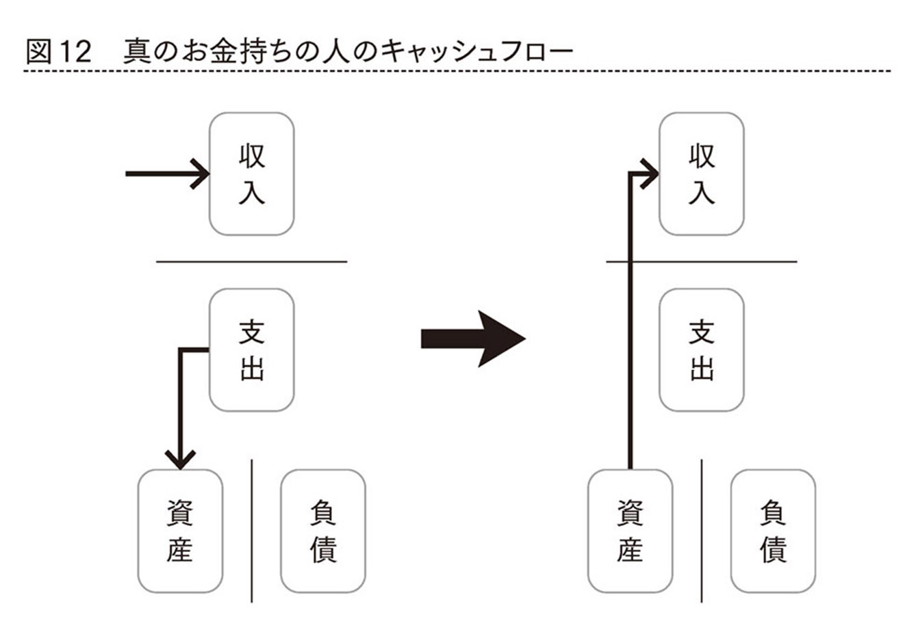
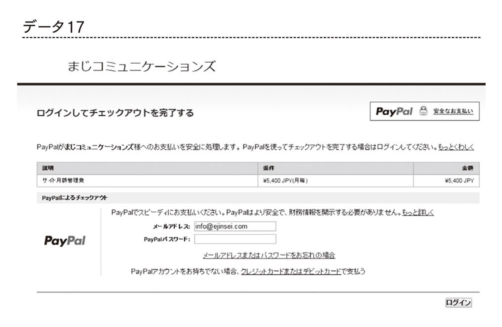
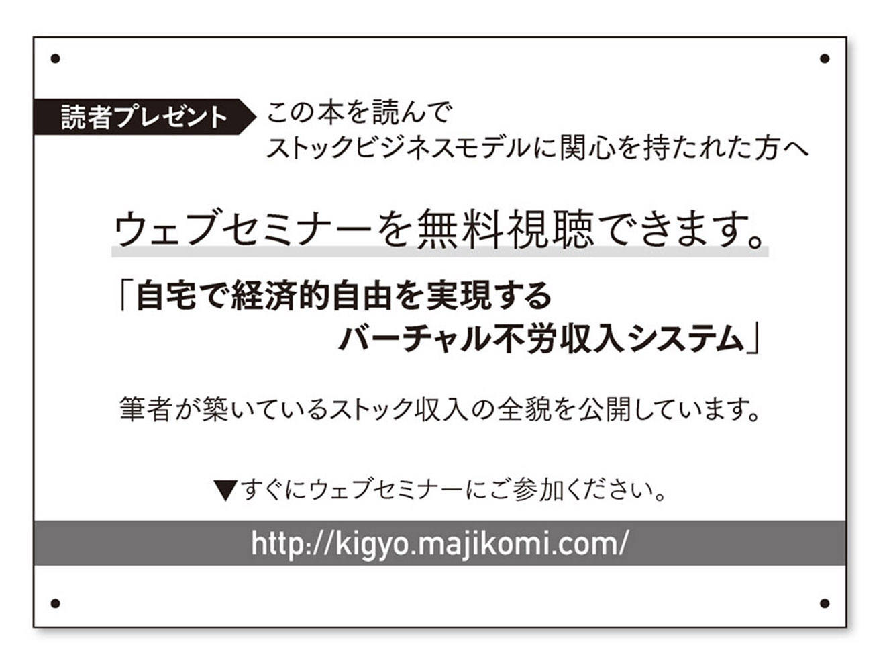

| ストックビジネスで「お金」と「自由な時間」を手にいれる方法 | |
| 知念章 | |
| こう書房 (2016) | |
はじめに
毎朝、さざ波の音で目が覚める。もう長い間、目覚ましは使っていない。目の前に広がるのは無限の自由な時間。窓の外に広がる海が、まるであなたの人生を祝福しているかのように、あなたの心を包み込む。自然に目が覚めたあなたは、お金の心配がない人生を手に入れていることに気がつく。毎月、毎月の売上が「自動的に」自分の口座に振り込まれるのを知っているからだ。
さて、今日は何をしようか？ 釣り？ ゴルフ？ それとも家族サービス？
やっぱり仕事をしよう。いまは好きなことしかしていないから、仕事が趣味のようになっている。人の役に立てるような仕事が僕の好きな仕事だ。だから、感謝の言葉が返って来ると、それが嬉しくて、釣りやゴルフより楽しい仕事を選ぶのだ。
毎月の売上の心配のために夜も眠れず悩み、社員を蹴飛ばし、家族に八つ当たりをしていた。そんな過去が懐かしい。まるで人生ががらりと変わった気分だ。天の祝福のように人生を変えることができたのは、「ストックビジネスモデル」と出合えたおかげだ。毎月の売上の安定が心の安寧をもたらしてくれ、人生をまるで違うものに変えてくれた。
そんなふうに、あくせく働く必要がない自由な人生を手に入れたら、あなたは時間を何に使うだろうか？ そんな自由な人生を手に入れるために、あなたは引き換えに何を差し出すだろうか？
こんにちは。立ち読みでこの本を手に取られた方、僕はあなたのような真剣で意欲の高い方が大好きだ。なんで面識のない僕にあなたのことがわかるかって？ 本屋に並ぶ数ある本のなかで、この本のようなビジネス書に手を伸ばす時点で、あなたがそんな方だと予測できるからだ。少し僕のことを話そう。
僕は２００６年に処女作を出版した。本の出版は僕のビジネスの後押しをしてくれた。しかし、それから僕のビジネスはジェットコースターのように急激な上り下りを経験した。当時はネットワークマーケティングという、本来は収入が安定するはずのビジネスをおこなっていたのに、予測のできないことばかりが起こり、有頂天からどん底まで味わった。
さまざまな事件がきっかけで、僕はネットワークマーケティング業界からはきっぱり足を洗った。その詳細については本文で話をしよう。ただ、ビジネスの酸いも甘いも経験したおかげで元公務員だった僕の人生は、ただ生きているだけの無味乾燥なものから、「生きている」を実感できるほど刺激的なものになった。ただ、公務員という退屈な「安定」がイヤで「自由」を求めて起業したのに、どん底になった時に、僕は心底、「安定」を欲した。他人の会社を手伝って「安定」報酬を得ながら命をつないでいた時期もあった。
そんな時期を経て、僕はようやくビジネスでの「安定」を手に入れることができた。おかげでいまでは気持ちの余裕もでき、処女作から10年の時を経て２作目を書く時間も手に入れることができた。僕が「安定」を手に入れることができたのは、「ストックビジネスモデル」との出合いのおかげだ。
いま、あなたがサラリーマンなら、「安定」はしているが、どこか同じところをグルグル回っている気がしないだろうか？ いつかは裕福な生活をしたいと思っていながらも、劇的に給料が上がるはずもなく、何かすごい出来事が起きることもなく、朗報の手紙が届くこともなく、受け身で何かを待っているだけの悶々とした人生を送っていないだろうか？
そう、僕の公務員時代がそうだったのだ。僕にも夢があった。しかし、その夢は押し入れの中にしまい込んでいた。毎日死んだふりして生きていた。なぜなら、その場所にいては、自分の夢は到底実現できないと知っていたからだ。いまいる場所から飛び出さなければならない。そう思いながらも、外の世界は焼肉定食。→間違いっ、弱肉強食。
飛び出すのが、とても怖かった。
でも、そんな恐怖心に打ち勝ち、飛び出してよかった。公務員時代には会えなかった人たちと出会い、公務員時代には体験できなかったほど旅行ができ、全国を飛び回り、生きている実感を持てた。
この本を手にしたからには、あなたは起業に関心がある、あるいは、すでに起業していて安定売上に関心があるのかもしれない。だとしたら、あなたはこの本を手にして、とても幸運だ。「ストックビジネス」のことを知らずに起業してしまうと、サラリーマン時代以上に余計に忙しいラットレースにはまり込む可能性があるからだ。
「ストックビジネス」は魔法の杖ではない。ただ、事業の安定において最も重要だと思われるリピート客の確保がとても効率よくできる仕組みだ。この仕組みを活用すると、毎月の売上がストックしていくので、心やすらかに企業経営ができる。
実は現在、さまざまな企業が（大企業から個人企業にいたるまで）、「ストックビジネスモデル」の採用を始めている。「ストックビジネス」は企業経営におけるトレンドなのだ。この本には「ストックビジネス」についての情報が余すことなく網羅されている。ここまで読んで先を読みたいのであれば、いますぐレジに向かい、この本を購入しよう。手元に置いてあなたのビジネスの指針としてくれれば、こんなに嬉しいことはない。
それでは、本文でまたお目にかかろう。
２０１６年９月吉日
知念 章
ストックビジネスで「お金」と「自由な時間」を手に入れる方法──もくじ
カバーデザイン―――ナカミツデザイン
組版・本文レイアウト―――北路社
１ 起業しても
ラットレースから抜け出せない理由
ラットレースというのは、ネズミが滑車をくるくる回っているあの状態を思い浮かべてくれればいい（図１参照）。この言葉は、『金持ち父さん貧乏父さん』（ロバート・キヨサキ著、筑摩書房）という本のなかに出てくる。
この本は２０００年に初版が出ていて、少し古い印象を受けるかもしれないが、２０１３年には改訂版が出て、いまでも売れ続けている、僕にとってもバイブルのような本だ。その教えはいまだに色あせることなく、ビジネスにおいて重要なヒントを得ることができる。
ラットレースの渦中にいると、クルクル滑車を回し続けなければならない。なぜなら足を止めると落下して死んでしまう可能性があるからだ。そう、ラットレースとは働くのを止めると収入が途切れるため、イヤでも辞めることができず、働き続かなければならない状態を表している。
ラットレースが問題なのは、いつまでも同じ場所をグルグル堂々巡りをしていることだ。ラットレースとは言うが、誰かとレースをしているわけではない。真面目に人生を送っていたはずが、夢をいつまでも実現できずに何か同じところをグルグル回っている。そんな感触を持っている人はラットレースの罠にはまっている可能性がある。
サラリーマンはラットレースの真っ只中に生きている。本人が気づいている、気づいていないにかかわらず、必死で足をこぎ続けることで生き続けるしかない状態にはまってしまっているのだ。この状態を抜け出すために脱サラ、起業を目指す人がいる。僕もそのうちのひとりだった。しかしながら、ラットレースの知識がないと、せっかく起業しても、さらに過酷なラットレースにはまり込むケースが後を絶たない。
僕の知り合いにお店をやっている人のいい夫婦がいるが、その誠実さゆえにお客がひっきりなしにやってくる。余裕のある生活を目指して短い営業時間で週休２日。「売り切れ御免」の商売をやっているのだが、営業時間以外は仕込みの時間であり、休む間もなく働いている。その労働時間はサラリーマンより長く、起業しても過酷なラットレースから抜け出せているわけではないうえに、逆にもっと激しいラットレースにはまり込んでいる。実際に彼らのような起業家も数多く存在する。
いつまでもラットレースから抜け出せない状態の人は、おそらく、自分自身がラットレースの渦中にいることに気がついてない。毎日が忙しく、じっくり自らを省みる時間がないのだろう。いつか何かが起きて、夢の実現が叶うと根拠なく信じていて、今日も忙しい仕事に向かう。こんなことを繰り返しているのかもしれない。つまり、起業してもラットレースから抜け出せない理由は、ラットレースの罠にはまっているという認識不足にあるのだろう。
僕はただ、ラットレースから抜け出したかっただけだ。公務員やサラリーマンは組織に入った瞬間に、自分の40年後の未来が見通せる。そう、自分のとなりに座っている上司が自分の先行き、人生の最終地点だ。僕はとなりの上司のライフスタイルを目標に40年を費やすことが考えられなかった。
だから、起業時に大きなビジネスを興すことを夢みたわけではない。ただただ、ラットレースから抜け出したかっただけだ。ラットレースを抜け出すには経済的自由を獲得すること。経済的自由についてはのちに説明するが、僕はこの目標に一貫して向かってきた。起業して16年の間にラットレースから抜け出すことに成功したと思ったら、ふり出しに戻るという経験を何度もした。
一時的にたくさんお金を儲けても、ラットレースに舞い戻るケースもよくある話だ。僕はその経験上、ラットレースを抜け出すことと、たくさんお金を稼ぐことは同義でないと感じた。多くの人が大金を稼ぐことを夢みながら、起業し、脱サラし、余計にひどいラットレースにはまり込むケースを目撃してきた。サラリーマン時代より稼ぎは少なくなったのに、余計に忙しくなったわけだ。だからラットレースはサラリーマンだけの課題ではない。
２ 金の亡者とは誰なのか？
世の中には、忙しさにやりがい、生きがいを感じている人がいるので、彼らはラットレースの渦中にいても幸せを感じていることだろう。しかし、そうでない人がほとんどではないかと思われる。なぜなら、人として生まれてきながら、まるで自由がなく、人間としての〝価値ある生活〟とほど遠い生活を毎日送っていると、やはり、虚しさに襲われるのが人間の本質ではないかと考えるからだ。
日本は自由な社会というのだが、本当に自由を満喫できる社会なのだろうか？ たとえば、現代サラリーマンは自由といえるだろうか？
朝、目が覚めると会社に行く準備の時間が待っている。そう、朝起きた瞬間から、時間は自分のためではなく、会社のために秒針を刻み始めるのだ。出勤中に満員電車を避ける自由もない。痛勤電車（入力間違いではない、僕の造語である）は、まるで監獄にズラズラと整列をして護送列車で運ばれていく囚人のようだ。彼らは朝から晩まで、まるで目に見えないオリの中に閉じ込められているようだ。そう、これは僕がサラリーマン時代に感じていた感覚だ。
オリは目に見えないけど確実に存在している。そこでは、どこに住み、何を食べて、何を着るのかまで自由が制限されている。心当たりはないだろうか？ あなたは自分が住みたいところに住み、食べたいものを食べ、着たいものを着ているだろうか？ 住みたいところではなく住めるところに住み、食べられるものを食べ、着られるものを着ている。すなわち、ココではすべての決定権は上司という名の看守が握っている。あるいは、そのうえに君臨する「お金」という主人がすべてを決めているのではないか。
オリの中にいると、自分で取りに行かなくても毎月エサを与えられ、年に２～３回ボーナスという大きなエサを与えられる。オリから出ると自らエサを獲得しなければならないため、非常に勇気が必要である。そのうえ、オリから出るタイミングもなかなか見極められないでいる。これがラットレースという罠にはまっている状態だ。
では、あなたをオリの中に入れ、見えない足枷をつけて縛りつけているのはいったい誰なのか？ 実はオリの外への道は閉ざされているわけではない。自由への門戸は常に開かれているのだ。つまり、オリに縛りつけているのは、ほかの誰でもない。あなた自身なのだ。自由への道は開かれているのに、なぜ飛び出さない。
あなたは誰か見えない主人に縛られているのだ。あなたを縛っている見えない主人。その正体は「お金」であると言わざるをえない。そう、現代サラリーマンは「お金」の奴隷であると断じざるを得ない。それは、オープンな自由への道へ飛び出さない理由を考えてみればわかる。飛び出せない一番の理由はやはり「お金」であろう。家族を養うため。住宅ローンがあるから。毎月の支払いがあるから。そう、すべては「お金」のために働いているのだ。お金が安定して入らなくなるからオリの中から飛び出せない。これはもう「お金」という主人のために働く奴隷と化しているとしか言えない。
もし、あなたがお金をもらえなくてもいまの仕事をしたい、いまの仕事に満足しているなら、そんなあなたの主人は「お金」ではなくあなた自身だろう。逆であれば、つまり、いまの仕事が「お金」がもらえなくてもやりたい仕事でなければ、あなたは「お金」という主人のために働いているに他ならない。一度自問自答してほしい。「お金」がもらえなくてもやりたい仕事をやる自由。それがあるのが現代日本社会なのだ。
お金儲けに熱心な人のことを「金の亡者」と批判する人がいる。しかし、誤解を恐れずに言えば、ラットレース真っ只中にはまっている人のほうが金の亡者と思わざるを得ない。すなわち、「お金」を主人として「お金」のために、自分の時間を費やし、やりたくないライフスタイルを送り、人生を犠牲にしているからだ。それこそ、「お金」さまさま。「金の亡者」ではないか。「金の亡者」でいたくなければ、自分の人生をお金にコントロールされるのではなく、人生の主導権を自らの手に取り戻さなければならない。
「忙しい」という字は「心を亡くすと書く」と誰かが言った。まさにズバリ的を射ている。忙しさにかまけると自分の人生が誰に支配されているのかわからなくなる。ラットレースに夢中でいるとラットレースに参加していることすらわからなくなる。
僕はサラリーマンの頃、周りの人間がみんな何の疑問も持たずに毎日を過ごしていることが不思議で仕方がなかった。「お金」より大切なものがあると言いながら、みんな自分の人生で最も大切なもののひとつである「時間」を「お金」に変えることしか考えていなかった。
幸せな人生には「お金」だけでは足りない。「お金」がたくさん稼げても子供と過ごす時間が犠牲になれば本末転倒だろう。かと言って、「時間」だけあればいいわけではない。「お金」がなく「時間」だけ持て余している人がどれだけやりがいがなく、悶々とした人生を送っているのかは想像が容易だろう。
そう、真の幸せな人生には「お金」と「時間」の双方が必要なのだ！
３ 真の幸せな人生には
「お金」と「時間」が必要である
オグ・マンディーノという世界的に著名な自己啓発の大ベストセラー作家が、ある講演会で８名の経済的に大成功を収めた人を紹介した。その８名は、１９２３年にシカゴで開催された国際的な会議に出席の名誉を与えられた真のミリオネアたちだった。８名の当時の肩書きを紹介しよう。
■世界最大の鉄鋼会社会長
■世界最大の公共事業会社会長
■世界最大のガス会社会長
■ニューヨーク証券取引場会長
■閣僚
■ウォール街の大物投資家
■世界最大独占企業会長
■国際移民銀行の会長
その輝かしい肩書きで理解できるように、公的立場にいる人たちも含めて、彼らは「お金」の儲け方を熟知した経済的な成功者たちだった。しかし、オグがこの８名を講演会で引き合いに出したのは、彼らの経済的な成功をたたえるためではなかった。その国際的な会議に参加した25年後の８名の末路を引き合いに出したのだ。
８名の25年後の末路はこうなった。
■世界最大の鉄鋼会社会長破産、死に至るまでの５年間は借金生活
■世界最大の公共事業会社会長起訴され、文無しで外国へ逃亡
■世界最大のガス会社会長精神病をわずらう
■ニューヨーク証券取引場会長服役
■閣僚牢獄からの釈放が認められ、自宅で死亡
■ウォール街の大物投資家自殺
■世界最大独占企業会長自殺
■国際移民銀行の会長自殺
ワオ！ なんということだ！
輝かしい会議への出席の後、８名全員が不幸な末路を迎えてしまったのだ。この事実は何を意味しているのだろうか？ オグは、「彼らはお金の儲け方は知っていたけど、生き方を知らなかった」と嘆いた。彼は、この講演会で彼らの実名まで出して紹介している。
彼は、経済的な成功のみが人生における成功だと勘違いしている人に警鐘を鳴らしたかったのだろう。オグ自身が経済的な成功を求め、毎日忙しく、ストレスまみれの生活をしてきて、そのことに気がついたと言及している。彼は大成功していた出版会社の社長を辞めて作家生活に入ったのだ。
経済的な成功が目的化してしまうと、間違いなく人生から手ひどいしっぺ返しを受けるようだ。経済的な成功はあくまで、それによりどんなライフスタイルを手に入れるのか？ どんな人生を生きたいのか？ という本質的な目的に達するための手段でしかないのだ。
僕は、彼らがお金儲けやお金儲けにまつわる見栄行動に忙しく、人として大切なことのために「時間」を使うのが下手だったと想像している。人として大切なことのために使う時間とは、自分と向き合う時間、家族と過ごす時間、子供の成長を見守る時間、社会と向き合う時間。これらの時間を持たない、すなわち時間貧乏が原因だったのではないかと考えている。やっぱり幸せな人生には「お金」と「時間」の両方が必要なのだ。
これらは車の両輪のように一方の回転を極端に速くすると、大きく曲がってしまう。まっすぐ進むためには両方をバランスよく、同じスピードで回転させる必要があるのだと思う。
なぜ、今回オグの話を持ち出したのだろう。僕は現代日本の拝金的な思考に危機感を抱いている。お金を稼いでいる人が偉いという錯覚が日本を覆っている気がするのは僕だけだろうか？
いま抱えている「お金」の問題を解決するのに、たくさん「お金」を稼げばいいと考えているなら、それは違う。それでは単に「お金」の問題の額が大きくなるだけだ。僕も経験済みだからわかるのだ。以来、僕は「お金」を稼ぐ以上に、「お金」を自動的に財布に入れ続ける流れを作ることを考えてきた。その流れができれば、安定した「お金」と共に、人生でかけがえのない「時間」を手に入れることができるためだ。
「時間」は誰にとっても重要だということには異論はないと思う。「お金」は失ってもまた稼ぐことはできるが、「時間」は過ぎ去ったらとり戻すことは不可能だ。どんなに「お金」を積んでも取り戻すことはできない。ただ、「お金」で時間を買うことは可能かもしれない。あくせく働かなくても収入の流れがあれば、目の前の「時間」はすべて自分の自由に使えるのだ。僕は「お金」で買える最も貴重で大切なものは「時間」ではないかと思っている。
４ いまこそラットレースを抜け出すべき時
サラリーマンを牢獄の囚人とかお金の亡者と失礼なことを言ったかもしれない。でも、これは僕がサラリーマン時代に自らに対して感じていた率直な感触である。
ところで、古代ローマ時代、サラリーマンはどんな位置づけだったかご存じだろうか？ ローマ市民とは支配層であり、いわば、資本家を意味した。資本家たちの生活を支える労働者階級を奴隷と呼んでいた。そう、古代ローマ時代のサラリーマンは奴隷階級だったのだ。資本家は基本的に労働をしないので、奴隷の労働がローマ市民の生活を支えていたのだ。
では、当時の奴隷の生活はどうだったのだろうか？ 奴隷といえば、こき使われ、ろくに食事も与えられず、自由に外も歩けないイメージだが、古代ローマの奴隷は、ちゃんとサラリー（給与）をもらって、自由な時間ももらっていたようだ。古代ローマでは労働の対価として金銭を要求する仕事は卑しいと思っていたようで、医者や教員なども労働を提供する人たちは、みんな奴隷階級だったのだ。
奴隷階級でも何らかのスキルを持つ専門職になると、高いサラリーをもらっていたようだ。高いサラリーをもらっていた奴隷は労働時間も短く、テルマエ（いわゆるスーパー銭湯）に入ることもできたそうで、お金を積めばローマ市民にもなれたのだという。現代市民と違うのは参政権がないぐらい。
そういう意味では現代サラリーマンより、古代ローマの奴隷のほうがいい暮らしをしていたと言う人もいるぐらいだ。ブラック企業のサラリーマンなどはまさに古代ローマの奴隷以下なのかもしれない。そう、会社のためにウツになったり、自殺をしたり、過労死したり、現代サラリーマンはローマの奴隷以下の不自由な生活を強いられているのが現状ではないだろうか？
人権という概念がなかった古代ローマ時代の奴隷でさえ、お金があれば、自由への道は閉ざされてはいなかったのだ。ましてや自由と人権が保障されている現代日本で、あなたをオリの中に入れ、見えない足枷をつけて縛り付けているのは、他の誰でもない、あなた自身なのだ。なぜなら、いつでも自由への門戸は開かれているからだ。
ローマの奴隷の例のように、僕たちサラリーマンは自由な生活を送っていると思っていたのにそれは単に「奴隷の自由」であり、制限された自由だったのだ。収入をいくらもらえるのか、どこに住もうか、どんな仕事をしようか、どんな服を着ようか、自分で決めていると思っていたのに、決めていたのは実は上司。
お金が主人なら、上司は看守。会社にいる時間だけでなく、朝起きた瞬間から自分の時間ではなく会社の時間。ようやく看守から解放され、自分の時間を取り戻せる頃、すなわち定年の頃には、すでに年をとってしまっている。しかも、年金生活は決してバラ色ではなく、僕らがリタイヤする頃にはもらえるかどうかもわからない。いまでさえ「老後破産」の人口は２００万人を超えているようなのだ。老後は安泰と思われていたサラリーマンは、いつからそんなギャンブルのような人生を強いられるようになったのだろうか？ そう、企業に依存する人生設計を変更すべき時期はとうに来ているのだ。
それならと脱サラしてお店を開業する方も、余計にひどい、お店という牢獄に入り込む危険性を持っている。上司という看守はいないし、すべてを自分が決めることができるけれども、今度はお客という看守に見張られている。お店という箱モノを作ると、客が来なくても安易に移動もできず、空間の自由も奪われる。お店の経営では、他力をうまく活用できなければ、サラリーマン時代以上にお金が儲かれば儲かるほど、自由が制限されていくのが実情だろう。
繰り返すが、僕は「お金」と「自由」のどちらも手に入れなければ、真の幸せはつかみとれないと思っている。幸せの尺度は人それぞれだが、「お金」があれば人生の選択肢が増える。どこに住もうか、何を着ようか、財布との相談なしに「自分が好きなもの」を基準に選択が可能になる。「自由」があれば、家族との時間、趣味の時間、旅行に行く時間、何もしない時間、誰にも邪魔されない自分の時間が目の前に無限に広がる。せっかく生まれてきたこの素晴らしい世界を満喫するには、「時間」が必要なのだ。
また、ほとんどの社会問題は「お金」と「時間」を合わせ持つことで解決ができるのではないかと考えている。夫婦ゲンカの原因のほとんどがこの２つに原因があると思われる。「私と仕事とどっちが大事なのよ～」よく恋人から迫られる究極の２択は、この２つを持っていれば、そんな質問さえ受けることがないだろう。「お金」持ちでも「時間」持ちでなければ、無限ループのようにこの質問に向き合わなければなるまい。
お店を持つなら、現代はバーチャルリアリティの世界でお店を持つほうが賢明だ。そう、ネット上のお店、すなわちウェブサイト。現代は本当にいい時代になった。ネット起業をするだけで時間と空間の自由を手に入れることが可能になったかのようだ。すなわち、ネット起業は痛勤の必要がなく、どこで仕事をするのか自由に決めることができる。バーチャル店舗であるウェブサイトは、自動的に集客をすることができ、寝てる間に注文が入ることも起こりうる。
振り返ってみてほしい。若い方はネットがあることが当たり前に思っているだろうが、僕らが就職した頃はネットはもちろんＰＣすら存在せず、すべての仕事を電話や訪問でおこなっていた。そんな時代に起業をするには、多額の資金が必要だった。なぜなら、高いアナログ広告を出す資金や自らの分身である営業マンの存在が必要だったからだ。そんな時代に勇気を出して起業しようとは思わなかったかもしれないし、おススメできなかったかもしれない。
しかし、現代は史上類をみないほどにチャンスにあふれている時代である。インターネットのおかげで起業に資金がかからなくなった。ウェブサイトが自分の分身として働いてくれるようになったのだ。ウェブサイトは、24時間文句も言わずに休みなしに働いてくれる優秀な営業マンを雇ったようなものだ。だから、ひとり起業、自宅起業でも十分にお金を儲けることができるようになった。起業をしたいと思っている方、「今」をおいて、いつ起業するのだろう？→もちろん、林修先生ふうに答えてほしい。（笑）
こんな便利なツールが使えるネット起業なので、全米では全労働人口の34％がサラリーマンではなく、フリーランスを選択しているとのデータ（２０１４年９月実施のフリーランス実態調査Freelancing in America）がある。なんと３人集まれば、そのうちの１人はフリーランス、つまりひとり起業された方に出会うという計算になる。日本ではその逆だろう。ほとんどのビジネスモデルがアメリカからの輸入であることを考えれば、近い将来、日本もそうなっていくのではないだろうか？
もちろん、全米のフリーランサーがすべてネット起業をしているとは限らない。しかしながら、全米の距離感を考えるとネットをツールとして使っているフリーランサーがほとんどだと考えられる。隣町まで訪問するのに四苦八苦するより、ネットでコンタクトをとる方が合理的であるからだ。
そして、起業するうえで選択すべき起業法はストックビジネスモデルである。起業して余計にひどいラットレースにはまり込まないためにもストック収入を意識した起業法を選択しよう。次章ではストックビジネスを活用してラットレースを抜け出す方法をお伝えしよう。
１ 自分がいま立っている場所を確認する
ラットレースから抜け出す方法を知るには、いま自分自身が立っている場所を知る必要がある。この立ち位置とは、これまたロバート・キヨサキ氏の著書『金持ち父さんのキャッシュフロー・クワドランド』で明確に提示している。金持ち父さん第二弾のこの本は、なぜ、お金を儲ければ儲けるほど忙しくなり、幸せになれないのか？ ある人は、なぜ、儲ければ儲けるほど自由になっていくのか？ 等の疑問に答え、僕自身の人生の指針となった素晴らしい著書である。これも改訂版が出ているので、ぜひ手に入れて一読してほしい。
さて、彼によると、人は「どこから収入を得ているのか？」によって４つの領域に分かれるそうだ。この領域のことをクワドランドと呼んでいる。まず、自分自身がいま得ている収入タイプがこの４つのクワドランドのどの領域に該当するのか、自身はどのクワドランドに身を置いているかを、図２を見ながら確認してほしい。
それぞれのクワドランドを解説しよう。
①Ｅクワドランド...ＥとはEmployee（従業員）のＥ。会社から給料をもらっている会社員、公務員、教員、団体職員。勤務医。つまり、毎月の固定給料をもらっている人はこのクワドランドに属している。
②Ｓクワドランド...ＳとはSelf-Employed（自営業者）のＳ。店長を兼務している個人商店のオーナー、自ら働く必要がある中小企業のオーナー、開業している弁護士、税理士などの士業、個人病院の開業医などが該当する。
③Ｂクワドランド...ＢとはBusiness Owner（ビジネスオーナー）のＢ。ここでいうビジネスオーナーは、自分が働かなくても従業員の働きによって会社が回っているクラスの会社のオーナーである。つまり、他人の働きにより収入を得ている人がこのクワドランドに該当する。
④Ｉクワドランド...ＩとはInvestor（投資家）のＩ。お金を働かせることによって収入を得ている人はこのクワドランドに該当する。
ご自身が得ている収入タイプから、ご自身がどこのクワドランドに位置しているか確認できただろうか？ もしかしたら人によっては複数のクワドランドから収入を得ているかもしれない。その場合、メインの収入源でどこのクワドランドなのかを認識してほしい。
このクワドランドは、職業や仕事内容で分かれているわけではなく、得ている収入タイプで分けられていることが理解できるであろう。同じ医者でも、勤務医はＥクワドランドに位置し、開業医はＳクワドランド、経営に専念する大病院のオーナー医師はＢクワドランドに位置しているのだ。クワドランドの意味は理解できただろうか？
ご自身の立ち位置が確認できたら、次のステップだ。
もし、あなたが、いまの立ち位置に満足しているなら、残念ながら、この先を読む必要がない。立ち読み中なら、速やかに本を閉じて書棚に本を返そう。すでに本を買ってしまっているなら、申し訳ない。この本が必要と思われる友人にプレゼントをするか、古本屋へ駈け込もう。残念ながら僕と出版社の方で返金するシステムはとっていない。あしからず了承いただきたい。
もし、あなたがいまの立ち位置に満足していないなら、次のステップへ読み進めてほしい。
２ どちらの収入タイプを
選択すべきかを検討する
まだ読み続けている？
だとしたら、あなたはいまの立ち位置には満足していないということだろう。
図２をご覧いただければわかると思うが、図の左側に位置しているクワドランド、すなわち、ＥとＳクワドランドについては、その収入タイプは「労働収入」ということになる。つまり、労働が収入の原資であり、言い換えると、「時間」を売って「お金」を得ているタイプの収入ということになる。だから、収入を増やすためには、労働を増やす、そう、時間を増やす必要が生じる。儲かれば儲かるほど時間貧乏になるのが左側のクワドランドだ。この状態をまさにラットレースと言うわけだ。
あなたが、もし、左側のクワドランドに位置しているのなら、好むと好まざるとにかかわらず、ラットレースの真っ只中でもがいていることだろう。「時間」が「お金」に代わるクワドランドなので、収入が激減する長期バケーションなどはとんでもない。生涯を身を粉にして他人の会社や自分の店に捧げる覚悟があるなら、このクワドランドにとどまっていても問題ない。ただ、もしあなたがラットレースから抜け出したいと望むなら、このクワドランドにとどまっていてはダメだ。
一方、右側のクワドランドであるＢクワドランドは他人を組織化し、働かせることによって収入を得ているタイプのクワドランドである。つまり、他人の労働が原資となるので、自身は働かなくてもよく、このクワドランドにいれば、儲かれば儲かるほど自由になっていく。これらの収入タイプは事業収入であるため、組織を作り、自分の複製を作り、売上を仕組み化するという、マネジメント能力が必要であり、気の遠くなるほど長いプロセスが必要で、誰にでも可能と言うわけではない。
Ｉクワドランドはお金を働かせてお金を稼ぐクワドランドであるが、このクワドランドは知識とスキルとある程度大きなタネ銭が必要であり、僕たちが目指すべき最終的な目的地と言えるクワドランドかもしれない。
ロバート・キヨサキ氏は、ＥやＳから一気にＩを目指すことは推奨していない。Ｂクワドランドに移動し、ビジネスをおこなうことで、投資に必要な知識やスキルを学ぶべきだとしている。
ラットレースを抜け出すには、左側のクワドランドから右側へ移動することが必要である。ロバート・キヨサキ氏の言葉を借りれば、左から右に移動することを「ファーストトラックに出る」と表現するらしい。つまり、あなたが現在、ＥクワドランドやＳクワドランドに位置しているなら、いまいる場所にとどまっている限り、ラットレースからは抜け出せない。ファーストトラックに出るには、クワドランドの移動が必要である。
しかしながら、Ｂクワドランドへの移動はたいへんなプロセスが必要であり、リスクが高く、能力も必要である。そこで、僕が着目したのが、今回この本のテーマである「ストックビジネスモデル」である。「ストックビジネス」は、そのメインの収入が「ストック収入」という収入プランが根幹にあるビジネスモデルである。
「ストック収入」とは、ひとりの顧客から毎月の課金を受けるタイプの収入で、顧客が増えるほど、収入がストックしていくのである。毎月の課金を自動化することで、毎月の売上の心配をしなくなり、時間の自由度が増していく。
この「ストック収入」を確立できれば、大規模な組織を構築しなくても、ラットレースから抜け出し、毎月の売上の心配から解放され、比較的自由な時間を手に入れることができるのだ。つまり、普通の人がファーストトラックに出る手段として比較的取り組みやすいのが「ストック収入の確立」であり、逆に中小個人事業主がファーストトラックに出るには「ストック収入」の確立が不可欠であると言える。
３ ストックビジネスモデルを採用する
もし、あなたが起業をお考えの方なら、起業当初からストックビジネスモデルでの起業をお勧めする。毎月の売上の心配をしながら、あくせく働くのをお望みでないなら、ストックビジネスモデルの採用は賢明な選択になるであろう。
僕の知り合いに年商１億円の経営者がいるが、彼はそれだけの売上を確保しながら、将来にとても不安を感じている。しかも来月の売上の心配をしているのだ。年商がどれほど大きくても、不確実な未来は心配の種になるのだろう。僕がストックビジネスモデルの採用を勧めるのは、ストック収入で未来を予測できる安心感が手に入るためである。
ストック収入の確立は実はどんな業種でも可能である。第５章で事例をあげるが、あなたのビジネスにもストック収入の確立、すなわちストックビジネスモデルの採用を真剣に検討すべきだろう。
ビジネスの成否のカギはリピート客の確保が握っていることは周知のことであり、新規顧客の獲得コストよりリピート客の獲得コストのほうが安いことは承知していることだと思う。ストックビジネスモデルを採用するということは、売上を安定させる仕組みづくりをおこなうということである。
驚くことに、多くの経営者がリピート客を確保し、継続的な売上を確保することについて、無頓着である。特に小さなお店を経営されているオーナーは、毎日の来客があることを天に祈り、風まかせ、運まかせの経営をされている方が多い。これではビジネスではなく、ギャンブルだ。
新規顧客をリピート客にすることがビジネスの最大の課題だとすれば、ストックビジネスモデルとは、新規顧客を自動的にリピート固定客化する仕組みであるといえよう。
図３はマーケティングにおける３ステップ、集客 → 顧客 → 固定客化の流れであるが、新規顧客をリピートしてもらうところで多くの企業が四苦八苦をしている。ストックビジネスモデルの採用は、顧客から固定客への移行が自動的におこなわれるという魅力があるのだ。次章からは、この素敵なストックビジネスモデルについて解説をしよう。
１ ストック収入の種類には
どんなものがある？
❶リピート商品
前述のとおり、ストック収入とは一度獲得したひとりの顧客から毎月継続的に得られるタイプの収入である。一方、ストック収入の対比として使われるのがフロー収入。フロー収入というのは流れゆく収入という意味。この定義を噛みしめるとよくわかると思うが、ネットで流行っているアフィリエイトや転売、せどり、情報販売などはストックビジネスではないので注意が必要だ。
この定義を満たすタイプの商品がある。それはリピート商品だ。リピート商品とは、毎月、毎月、継続して使用する消耗品等が該当する。あなたも毎月、毎月、購入している商品があるだろう。たとえば、米、水、食品、化粧品、健康食品、はみがき、石鹸等があげられる。要は、人が生活するうえで基本的な商品である衣食住の分野にこれらリピート商品が多い。
ただ、これらリピート商品はすでに大手企業の手がついていることが多く、競合が激しい。食品や日用品などは大手スーパーの独壇場だ。しかし、工夫しだいでこれらの商品の流通を仕組み化することができれば、ストックビジネスを構築できるかもしれない。米屋などはもう少しマーケティングを工夫し、顧客を囲い込み、ストック収入化を目指すべきだ。米や水は典型的なリピート商品であり、配達などできめ細かく顧客の囲い込みができればストック収入による売上安定化はたやすくなるだろう。
通販企業では、化粧品や健康食品を中心に定期購入制度を導入し、リピート商品の売上をストック収入化している。定期購入に同意した顧客に対して毎月自動決済のうえ、自動発送をしているので、超安定売上が確保されている。
目標の売上規模を確保できれば、あとは定期顧客へのフォローアップだけに集中するという手もある。ただ、残念ながらよほど商品力が強くなければ、大手通販企業でも定期購入のリピート率はそれほど高くないようだ。だから、大手通販企業は広告を出し続けているのだろう。ストック収入を継続して積み上げる仕組みがあっても商品力によっては苦戦を強いられるかもしれない。
衣食住のうち、衣料の部門ではアパレルショップを中心に流通がされていて、ストック収入化は難しいかと思いきや、アパレル業界でもストックビジネスモデルを採用している企業が登場している。第５章の事例のなかで、アパレル業界におけるユニークなストックビジネスモデルを紹介しよう。
衣食住のうち、住居の部分におけるストック収入については賃貸マンションなどによる家賃収入があげられる。家賃収入は典型的なストック収入であり、そのストック収入は不労収入になっていく。ただ、収入を増やすには、不動産を増やすなどハイリスクなところがあり、誰もが手を出せるモデルではない。
しかし、最近はサラリーマンの与信枠を利用したサラリーマン大家や主婦大家など盛んになってきていることを考えると、これが魅力的なビジネスモデルであることは間違いない。第５章では、サブリースという低リスクでチャレンジできるストックビジネスモデルの事例を紹介しよう。
❷会員制ビジネス
商品の売上ではなく、会費売上がメイン収入であるビジネスモデルである。スポーツジムが典型的な事例だろう。ジムの会員制ビジネスは幽霊会員の存在が前提にあるような気がしているのは僕だけだろうか？ すなわち、もし、スポーツジムで登録している人すべてが毎日ジムに通ったら、ジムは人でごった返し、器具がなかなか空かないなどのクレームが殺到することだろう。でも、実際はそんな様子は見られない。それに全員が毎日通うと、おそらくコストがかかりすぎて赤字になるだろう。僕はジムと契約してほとんど通えなかった経験が何度かあり、空の会費を結構支払った。別にそれを恨んでいるわけではなく、僕のような幽霊会員は、ジムにとって得意客なのだろうと思うわけだ。
少し話がずれたが、スポーツジムのビジネスモデルは、スポーツをする場と器具や機会を提供し、利用料金という形の会費を徴収している。想像できるコストは地代家賃、器具リース代、施設のメンテナンス代、広告費の他に大部分が人件費だろう。最近は差別化のために銭湯に負けないぐらいのスパが用意されていたりする。損益分岐点を超えれば、会員数が多ければ多いほど、その会費はそのまま利益になるイメージだろう。
会員制ビジネスで僕が一番印象に残っているビジネスモデルがある。このビジネスモデルを聞いて以来、僕は会員制ビジネスの魅力に取りつかれた。ただし、あるセミナーで聞いた話なので実在店舗の話なのかどうかの裏は取れていないが、十分に実践可能なビジネスモデルだと思うので紹介する。
あるところに60坪の小さなブランドショップがある。扱っているのは、グッチやシャネル、エルメスなどのいわゆる一流ブランド品。この地域には同じようなブランドショップが軒並み店舗を連ねており、たいへんな激戦地域となっている。ところが、この小さなブランドショップだけには、毎日、毎日、行列ができているというのだ。
なぜだろうか？
実は、このブランドショップはお店の仕入れ値でお客にブランド品を正規販売している。
なに？ 仕入れ値で販売？
では、お店の利益は？ このお店はボランティア？ いったいどういうこと？ 僕の頭の中はたくさんの？ でいっぱいになった。仕入れ値で買えるなら、そりゃ行列もできるだろう？ あなたも行列に並ぶだろうか？
ところで、このお店の利益は年間約８億円だそうだ。売上じゃなくて利益がである。当然、ブランド品の販売で利益が出るわけではない。その他の利益が８億円なのだ。
いったいどういうこと？
からくりがわかった人がいたら、あなたは事業の天才。センス抜群だ。頭の固い僕は答えを聞くまでわからなかった。この章のテーマから答えは導き出せるかもしれない。そう、答えは、やはり会員制ビジネスである。
このお店は年会費を徴収し、会員向けにブランド品を仕入れ値で渡すというサービスをおこなっているのだ。ブランド大好きな中毒とも言うべきファン層は必ず存在する。彼女たちは年会費を支払ってでも安くブランド品をたくさん手に入れたいのだ。
年会費の合計が年間約８億円。60坪の小規模なお店だと十分な利益だろう。このアイディアを考案した人は天才だと思う。物の販売ではなく、アイディアがお金になった好例であろう。会費が主な収入源なら、物が売れようが売れまいが、景気がよかろうがよくなかろうが安定利益の確保が可能になる。利益を増やそうと思えば会員を増やせばいいだけだ。やめる会員も出てくるだろうが、やめたら補充をすればいいだけの話。
このビジネスモデルは近江商人の「三方良し」の精神を体現している。すなわち、お店は十分な利益を上げることができ、会費売上というストック収入により安定売上の確保に成功している。では、メーカーは？ メーカーの流通量は通常販売の形態より増えていることが予想できるだろう。コアなファンが原価で購入する商品流通量は通常価格での流通量より多いことが予測できるためである。そうなるとメーカーも良しということになる。さらに顧客はどうだろう。言うまでもないが、顧客は会費を払ってでも大好きなブランド品に囲まれた生活が実現でき、とても喜んでいるだろう。そう、販売店良し、メーカー良し、顧客良しの「三方良し」が実現できているのである。
実はこのようなアイディアは、いろいろな業界で取り入れられつつある。大阪でも、卸売り業者による、会員制で会員に卸値に近い価格で商品を販売するサービスが非常に好調に成長している。そのお店に入るには電車の自動改札のようなところに会員証をかざす必要があるのだ。コストコなども、年会費を徴収し、商品を安く流通させている。
この会費収入は、ストック型収入（積み上げ型）であり、一度築き上げるとお店の来客数や景気に関係なく入り続けるタイプの収入になる。一方、通常のお店のようなビジネスモデルは、フロー型収入（そのとき型）がメインであり、ある月はお客が多くて売上があがったけど、翌月はまたゼロから売上を作る必要があり、景気の影響を非常に受けやすくなる。
会費収入のようなストック型収入は、毎月、毎月、会費という売上見込みがあるところからスタートするので非常に安定した売上、利益を確保できるのだ。いますぐあなたのビジネスにも会員制サービス導入を検討すべきだろう。ブランド品というリピート商品とは言えない商品でも会員制ビジネスの導入は可能なのだから、あなたのビジネスでもおそらく可能であろう。
❸インフラビジネス
インフラビジネスは僕が最も大好きなビジネスである。インフラビジネスとは電気、水道、ガスなど社会基盤を提供し、その使用料金を徴収するビジネスモデル。これらは大多数の国民が顧客となり、超高い安定売上が望めるため、この分野は政府や元政府系企業が独占している。もちろん、大規模な投資が必要であり、安定供給や安全性など大きな課題がある事業なので仕方がないが...。
不動産、電話、携帯電話、ネット回線なども個人が生活するうえで必須インフラも有望なストックビジネスだ。ソフトバンクという会社は創業時、出版ビジネスをおこなっていた記憶があるが、その後、ＡＤＳＬ事業者となり、大借金をして携帯電話事業を買収した。ストックビジネスモデルをお金を支払って購入したわけである。
企業向けのインフラを提供しているのが、前出の事業の他にレンタルサーバー業やウェブサイト事業である。僕自身がおこなっているのが、このウェブサイト制作事業だ。これらはサーバー上のスペースをレンタルするというバーチャル不動産事業と僕はとらえている。ウェブサイト制作費用自体は労働収入であるが、月額管理費というストック収入を実現できるわけだ。企業インフラをビジネスにすると、超安定したストック収入が実現できる。なぜなら企業は事業を辞めない限り、継続して使用し続けてくれるからだ。
ウェブサイト制作業を営みながら月額課金をしない、すなわち、ストック収入を徴収せず、単なる労働収入を得る仕事として経営している方が見受けられるが、得策ではない。月額課金をしないのは競合対策かもしれないが、ストック収入を甘く見ているのではないかと思う。だからプログラマー、デザイナーなどＩＴ技術者は日雇い労働者などと言われるのだ。
納期に追われている彼らみたいなクリエイターは本来、自らの著作物についてはライセンス収入を得られるべきだと僕は思っている。僕が尊敬するダイレクト・レスポンス・マーケティングの第一人者であるダン・ケネディ氏は、マーケティングの仕事にも成果報酬ではあるがストック型収入を要求している。
ウェブサイト制作業を立ち上げることで、彼らもストック型のライセンス収入を得られるようにしたい。あるいは、プログラムやデザインなど特別なスキルを持たない人にもストック収入を構築してほしい。そんな思いから僕はウェブサイト制作業における自らのパートナーも募集している。関心がある方は問い合わせてみてほしい。
２ ストック収入を確立すべき３つの理由
もし、あなたが起業をお考えなら、あるいは経営者なら、ストック型ビジネスモデルを検討すべきだと再三申し上げてきた。売上が一度きりで終わるフロー収入よりも、何度も継続して発生するストック収入の確立を目指したほうが健全なビジネスの運営ができるからである。ここではストック収入を確立すべき３つの理由として、ストック収入についてさらに深く追求していく。
理由１ 事業では必ずストック型支出が発生する
事業をおこなううえで、必ず発生してくるのがストック型支出（僕の造語）である。僕はストック型収入と真逆の毎月継続して発生する支出をストック型支出と呼んでいる。いわゆる固定費というやつだ。これは少し考えればわかるだろう。お店や事務所を開くなら、家賃が毎月かかる。その他、水道光熱費に、電話代、最近ではネット回線代などの通信費。人を雇うなら給与などの人件費もある。
これらは、毎月、毎月、売上が足らない月でも発生するストック型支出になる。そして、たいがい、毎月発生するストック型支出が先に決定したうえで事業を開始する。すると、それを上回る売上を毎月上げることができなければ、赤字となり利益はとれなくなってしまう。非常にシンプルな話だ。つまり、どんなビジネスでも利益を上げるために毎月必要となる売上があるわけだ。
おおざっぱに言うと、赤字と黒字の境目の損益分岐点を超えない限り会社に利益は残らないわけで、超えない経営をずっと続けているのが赤字経営。これは、いつかは破綻につながる。フロー収入を追求していると、売上が上がったり下がったりのジェットコースター状態を繰り返し、赤字になったり黒字になったりを繰り返す不安定な経営になるであろう。赤字になった時に赤字を埋められる現金がなかったら、つまり、ストック型支出を支払えなくなった時点で倒産ということにもなる。
一方でストック収入を確立していれば、ストック型支出のような毎月の支払いを超えて、毎月定期的な売上を確保することで経営が飛躍的に安定する。ストック型支出を稼ぐために、毎月、毎月、ゼロから始まるフロー収入を確保しようと必死になると、従業員にもその気持ちであたってしまい、売上があがらない焦りを営業マンにぶつけたり、ついつい余裕のない対応をしてしまいがちになるであろう。
一方でストック収入をストック型支出を上回るだけ確立していると、従業員は家族のように扱うことができ、余計に生産性があがり、ストック収入がますます増える好循環が生まれる。要するに、ストック収入は心の安寧と安定経営につながるのだ。
理由２ ストック収入は心の安寧につながる
フロー収入をビジネスの根幹に据えていると、毎月の売上は月末の追い込みを終えた瞬間にリセットされ、翌月初頭には再度ゼロから積み上げることになる。このような状態を繰り返していると、前述のとおり、心の安寧は得られない。売上が上がらない焦りから、強引な売り込みや従業員へのやつあたりなど、およそ生産性のないことに神経をとがらせてしまう可能性がある。
なぜ、このようなことが言えるのか？ 僕自身が体験者だからだ。僕は、これまでに何度かフロー収入のために働いた経験がある。売上を達成するための毎月の目標があり、それに向けて毎月の営業活動。月末ともなると、「絶対にあきらめるな」との指示が飛ぶなかでの必死の追い込み。真剣に働いていて、月末ギリギリに目標達成なんかしようものなら、その達成感や抑揚感は半端なく大きなものだった。
まさにアドレナリン全開！って感じだ。この抑揚感を味わいたくて、フロー収入ビジネスを好んでおこなっている人もおられるのかもしれない。でも、僕はこのやり方を３ヶ月続けた時点で非常に疑問を感じた。月末めちゃくちゃ追い込みをして、あきらめずに目標を達成した！
ヤッタ～♪
でも、その数時間後には、また実績がリセットされ、翌月の営業活動がスタートするのだ。月初にはまだ前月の余韻が残っていて、エンジンがかからないままに半ばを過ぎ、お尻に火がつき月末へ向けてスパートをする。ざっと言うと、このような動きをしていたのだ。これは不健全ではないだろうか？ おまけに、この当時に顧客から言われたひとことが強烈に僕の頭にハンマーパンチをぶつけた。
「知念さんって強引なんですね」
僕は当時からダイレクトレスポンスマーケティングという手法を使っていた。営業スタイルは、いわゆる反響営業である。強引と言われる訪販などはやっていない。チラシやウェブで問い合わせがあった方へ、メールフォローとテレマーケティングをおこなっていた。でも、あくまでも問い合わせがあった方、電話で話をしたいという要望があった方だけに電話をしていたのだ。
テレマーケティングの場合は、自分で作成したスクリプトを使用し、すべてその文章を読むことで対応した。つまり、電話では自分の言葉ではなく、「文章を読む」ことに徹していたのだ。それなのに、「売り方が強引」。これには僕は驚いた。スクリプトを読んでいながら、押しが強く感じる。この現象はいったい何だろう？
タイミングはやはり月末だった。心当たりを振り返ると、月末追い込みキャンペーンで僕自身の強烈な、売上を上げたいと焦る気持ちが、単に文章を読みながらも、相手に伝わってしまったのではないかという点。「どうしても決めたい」という気持ちが相手に強引な印象で伝わってしまったのだろう。
この一件以来、僕はゆったりとした気持ちでビジネスができるストック収入へ意識を移行した。毎月、毎月、売上のあてがある。毎月の仕事が「積み上がるタイプの収入」をもたらす。このストック収入は、本当に想像以上に心の安寧をもたらしてくれる。強引な営業や従業員への痛烈なやつあたりをしたくないのなら、心の安寧を持ちつつ事業をおこないたいなら、そして、同じ働くなら、ストック収入の確立のために働いた方がいいのではないか。
理由３ ストック収入は自由をもたらす
ストック収入がストック型支出を超えると「利益が出続ける体質」になる。いくらストック収入と言っても、商品やサービスによるが、そのまま放置していると売上は常に低下のベクトルを示している。なぜなら、一定の顧客は商品やサービスを使い続けることを辞めるからだ。（ただし、事業者を相手にしたＢｔｏＢのインフラビジネスはリピート率が非常に高いという特徴がある。）そのため、ストック収入にはメンテナンスが必要である。
新規顧客の追加、既存顧客へのアフターフォロー。これらの仕事をおこなわなければ、ストック収入といえども、売上は先細りになるであろう。ただし、逆に言うと、最低限のメンテナンスで売上は非常に安定する。メンテナンス作業を仕組み化し、自動化できれば、安定した売上は思わぬメリットをもたしてくれる。それが、すなわち、売上が増えれば増えるほど、自由になっていくということだ。
要は、フロー収入は売上を上げるには相当な労力や時間を使うのだが、ストック収入では、労力や時間は必要最低限で済むので、労力と時間の節約、余剰時間が生まれるわけだ。つまり、ストック収入は、心の安寧と共に自由をもたらしてくれ、余裕ある事業経営が実現するのだ。その余剰時間を家族のためなどプライベートの時間に使うのもよし、他の事業を立ち上げる時間に投資するのもよし、時間の使い方は自由。
そう、ストック収入は自由をもたらしてくれるのだ。売上が安定するのだから、従業員には１日８時間労働を強いる必要もない。そもそも、「１日８時間労働」は誰が言い出したのだろうか？ １日８時間も働くと他のことができなくなってしまう。
会社のために８時間も拘束すると（多くの場合もっと長時間拘束されるのが現実）、それはもう、その人の人生の時間を安く支配していることになる。
時間は誰にとってもかけがえのない大事なもの。失えば二度と戻ってこない有限の資源だ。そう思えば、どんな会社でもその給料は一人の人間の人生を背負うには、あまりにも安すぎる気がするのは僕だけだろうか？ また、１日８時間労働は現代人の働き方とは合わなくなってきているのかもしれない。ＰＣやネット、ロボットなどＩＴ化が進むことで、時間をかければ労働生産性が上がるとは言えなくなってきたためである。
いずれにしても、ストック収入の実現は売上の安定、心の安寧、時間の余裕をもたらす素晴らしいタイプの収入であることは明白である。
３ ストックビジネスは
顧客のライフタイムバリュー（ＬＴＶ）を最大化する
ライフタイムバリュー（ＬＴＶ）はご存じだろうか？ 「顧客生涯価値」と呼ばれる、この概念は、「ひとりの顧客があなたの会社にもたらす価値」を表している。ストック収入の定義を「ひとりの顧客から毎月の課金を受けるタイプの収入」と言及したが、双方とも「鍵はひとりの顧客」である。つまり、ストックビジネスはひとりの顧客と生涯に渡りお付き合いする覚悟が必要であり、ＬＴＶを最大化できる手段であることが理解できよう。
一度獲得した顧客がリピート客にならなければ、あなたのビジネスは必ず先細りしてしまい、いつかは倒れてしまうであろう。新規客ばかり求めていると顧客獲得コストが高くついてしまうためである。逆に寂れた場末のスナックがつぶれないのは、確固たる常連客や贔屓客を確保しているからだろう。顧客のライフタイムバリューをしっかりと意識し、ビジネスモデル化することが喫緊の課題として必要なのだ。
たとえば、飲食店などのお店を構えている経営者の方。多くの大企業がこぞってポイントカードを導入している理由はご存じだろうか？ それは、もちろん、顧客を囲い込み、リピートを促すのに有効だからだ。ポイントカード会員となっていて、ポイントがたまっていけば、顧客は他のお店で買うより、そこで買おうという気になる。そのため、ポイントカードはリピート客の確保、顧客の囲い込みに有効なのだ。
百貨店も友の会という会員制を採用することで、顧客を囲い込んでいる。過日、僕の母が百貨店の会費が戻ってくるという話をしていた。沖縄でたった２つしかない百貨店のうち、１つが閉店してしまうので会費の清算をするというわけだ。百貨店の会員制はポイントカードの意味もあるが、会費の積み立てをしていると利子がつくという銀行のような役割も持っている。いまどきの銀行は預金にほとんど利子がつかないので、母は戻ってきた利子をたいそう喜んでいた。
なぜ百貨店は利子までつけて顧客をもてなすのだろう？ 損をしてまで利子をつける理由は？ そう、百貨店にはＬＴＶ（顧客生涯価値）という概念がしっかり定着しているためだ。顧客の囲い込み、リピート客、ファン客の確保のためにこうしたサービスをおこなっているのだ。母は、おそらく、30数年以上に渡り（もしかしたらもっと長いかも）２つの百貨店の優良顧客だった。これらの百貨店が母からもたらされた総利益、生涯価値と比較すると利子はスズメの涙ほどだったのだろう。
なぜ、いま、百貨店の話をするのだ？ と思っただろうか？ こうした百貨店のビジネスモデルもあなたのお店に取り入れられるようなヒントがあるかもしれないからだ。たとえあなたのお店が小さなお店だとしても、ＬＴＶ（生涯顧客価値）を検討しなければならない。もし、あなたが新規来店客をもてなすことに必死で、せっかく一度来店したその顧客をそのまま帰してしまっているなら、繰り返しになるが、それは事業をやっているのではなくギャンブルをやっていることになるのかもしれない。せっかく確保した来店客がリピートするかどうかは運まかせ、風まかせだからだ。
顧客のＬＴＶ（生涯価値）を考え、ビジネスモデルを組み立てるべきだろう。一度確保した新規顧客をリピートさせるにはどうしたらいいのか必死に知恵を絞ろう！ 前述のとおり、顧客のＬＴＶを最大化できるのがストックビジネスモデルである。あなたが持つ商材やサービスが、ストック型商材でなくてもストック型ビジネスモデルの確立は可能だ。
要は毎月、毎月リピートしてくれる顧客を、運まかせにではなくシステマチックに確保するビジネスモデルを確立することである。あなたが扱っている商材が、ストック型商材でないなら、ひとりの顧客に違う商材を買ってもらったり、他の会社やお店が扱うストック型商材を代理店として販売し、ストック型収入を確保したり、いろいろ考えられよう。
先にお伝えしたブランドショップも通販もポイントカードも百貨店も、ストック型ビジネスモデルを確立している企業は会員制ビジネスをおこなっているケースが多い。自らの顧客を会員として特別扱いし、リピートしてもらうというビジネスモデルだ。この会員制ビジネスは、顧客の囲い込みという点では非常に威力を発揮し、ＬＴＶを最大化するには有効だ。
もし、あなたが飲食店をやっているとしても会員制の導入は可能だ。会員価格と一般価格との二重価格でサービスを提供すればいかがだろうか？ 店内のオペレーションがたいへんになるかもしれないが、導入する価値はある。
あるいは、僕が学生時代にまだ残っていたが、月額固定料金で食事を提供する食堂をモデルにできないだろうか？ 初めて一人暮らしをする学生の親にとって、バランスのとれた食事をとれるのかが心配の種である。そのため、毎月食費を定期払いにし、子供が食べたいものではなく、親が食べさせたいバランスの取れた食事を食堂が提供するのだ。いまはなくなってしまったのかもしれないこのモデルは、現代によみがえらせても十分ニーズがあるだろう。
このように、どんな業態でも知恵を絞れば会員制ビジネスの導入は可能だ。翌月の売上が計算できるということは、起業家や経営者にとっては非常にありがたいことで、ストック型のビジネスモデルをオススメするゆえんである。
４ ストックビジネスが
自由を得られるための条件とは？
ストックビジネスの確立は、どんな業種でも、扱う商品がリピート商品でなくてもアイディア次第で可能であることが理解できたかと思う。しかし、この本の主テーマはストックビジネスで自由を得るところにある。そのためにラットレースを抜け出してファーストトラックに出るには、すなわち自由を得られるためには、いくつか条件が必要である。
まずは、仕事の属人化をしてはいけないという点だ。属人化とは、自分にしかできない仕事をつくってしまうことだ。自分しかできない仕事があると、いくらビジネスをストック化しても、売上が増えれば仕事が増えてしまう。ビジネスにおいて自分自身を売り込んだり、ブランディングすることは大事なことかもしれないが、ビジネスの主役をいかに自分から商品やサービスに譲って手を引くか、すなわち手離れをよくするかを検討しなければならない。
第５章の事例でも紹介するが、一番属人化が難しい分野が役務を提供しているサービス業だろう。接骨院売上をストック化したとしても、機械化を検討したり、他の先生を雇う検討をすることが必要だろう。そうでなければストック収入であっても、それが自分の時間を投入する労働収入であれば、売上が積み上がるほど時間がなくなるためだ。
Ｓクワドランドに属する人は僕も含めて何でも自分でやりたがり、どちらかと言うと他人より上手にできてしまったりするので、他人を信用するという難しい仕事にチャレンジする必要がある。僕はこの問題をインフラビジネスへ参入することで解決した。インフラビジネスとは前述のとおり、何らかのインフラを提供し、使用料金を徴収するビジネスである。顧客にインフラを使ってもらうだけなので、手離れがとてもいいのである。ポイントは脱属人化である。
もうひとつ考えてほしいことは、自由という意味についてである。「時間の自由」が真っ先に思い浮かぶだろう。ストックビジネスは条件付きだが時間の自由を得られるビジネスモデルである。全くの不労収入にはならないまでも、あくせく働く必要は全くなくなる。属人化を避けることができれば、その働く時間は限りなくゼロに近くできる。
ストックビジネスで得られる自由には、もうひとつ「精神の自由」があげられる。次章で詳細を語るが、僕はかつてネットワークマーケティングで毎月、毎月１００万円以上のストック収入を実現していた。想像してほしい。何もしないでも毎月これぐらいのお金が自分の口座に振り込まれるのだ。それがどんなに素晴らしいことか。サラリーマンでこれぐらいの月収を稼いでいる人は、どれだけ時間を投入しているのか。
僕はようやくファーストトラックに出られたと喜んだ。ところが、この収入の内訳が問題だった。この収入のすべてが１社からのコミッションに頼っていたのだ。そのため、その１社がこけるとコミッションはゼロになる。僕は実際にこの１社から契約を打ち切られ、ストック収入がゼロにリセットされた経験がある。このため、僕は１社に頼るビジネスモデルは危険だと感じた。それに１社に生殺与奪権を握られると精神が不自由になるのだ。
そのため、僕はストック収入を複数の顧客、取引先で確立することに舵を切った。顧客が複数存在するとリスクが分散され、精神的自由が実現できた。イヤな客は断ることも可能になった。この自由の感覚は実際に経験したものでないとわからないだろう。好きなことを書いたり話したりしても誰も僕の邪魔をしない。自分の生き方やポリシーを貫き通せる。これらのことは思った以上に精神が伸び伸びと健やかに羽を伸ばすことができる。それだけ自由な日本社会なのに、僕たちは精神的抑圧を感じる瞬間が多いということなのだろう。
サラリーマンの問題点もまさにここにあり、収入源を１社に頼っているために会社に生殺与奪権を握られ、理不尽な要求に屈したりしてしまうのだろう。ブラック企業がはびこる原因にもなる。
いまやサラリーマンでも副業が認められる時代になっており、大企業のなかにも副業を認める企業が出てきているようだ。僕はリスク分散の意味でも副業を立ち上げ、サラリーマンでも複数の収入源を手に入れる必要があると考えている。採用すべきビジネスモデルはやはりストックビジネスだ。時間が自由になるので副業でも実現可能だからだ。複数の収入源の確立によって、いつリストラされてもいいように備えることで精神の自由が実現されるだろう。
５ ストック収入の確立により
経済的自由を実現させる方法
「経済的自由」とは辞書で引くと、憲法で保障されている権利、経済的自由権として登場するが、ここでは、あくせく働かなくても入ってくる収入が毎月の生活費などの支出を超える状態のことと定義する（図４）。
ストック収入が限りなく不労収入に近く、毎月の支出を上回って毎月継続的に入ってくる状態になれば、経済的に自由になった。すなわちラットレースから抜け出し、ファーストトラックに移動したと言えるのである。非常にシンプルな話だ。
僕たちが毎月の生活費を賄え、趣味や嗜好品にお金をいくら支出するかは人によって異なるが、たとえば家族を持っていても毎月50万円（年収６００万円）もあれば、それなりの豊かな生活は実現できるだろう。毎月50万円のストック収入が実現できていれば経済的自由は実現できるわけだ。経済的自由を得るのに、大きな額の売上は必要ないことが理解できるだろう。
月収50万円は少ないと思われただろうか？ よくネット上では億を稼いでいる話が出てくるので、多くの人がマヒしているのかもしれない。
図５を見てほしい。ストック収入での月収50万円というのは、たとえ給与収入が１００万円あったとしても、その本質がまるで違うことが理解できるだろうか？ あなたは図５のどちらの収入タイプを選ぶだろうか？ この本の趣旨を理解している人なら、当然Ｂを選ぶべきだろうと思っただろうか？ なぜ僕はこんな話をするのだろうと思われたかもしれない。実際にはＡを選ぶ人もかなり多いのだ。
ストック収入を実現するうえで、よくやる過ちが目の前の収入に欲を出すという点である。大きな額を提示されると、つい、収入タイプを考慮せずに飛びついてしまうことが多いのだ。だから、ネット上でも高額塾などでお金を失う人が多発している。高額塾を批判しているのではなく、一部の人が高額の収入に釣られて理性を失うことが問題だと思うのだ。
ファーストトラックに入るための練習に最適なものがある。それは、また登場していただくが、ロバート・キヨサキ氏の会社が開発したボードゲームだ。これは人生ゲームのようなゲームで、ラットレースからファーストトラックに抜け出せれば、上がりというものだ。僕も何度かやってみたが、いつも一緒にやっているメンバーで一番先にあがることができた。
ゲームそのものは非常にシンプルで、要するにストックビジネスを購入し、ストック収入を増やし続けることで上がりに近づくゲームなのだ。ところが、僕にとって簡単に思えるこのゲームでも、なかなか上がらない人がたくさん存在する。
僕は原因を考えてみた。僕は実生活で実際にファーストトラックに何度か抜け出せた経験があったので、このゲーム自体とストック収入の威力が心底腹に落ちて理解できていたのだと分析した。目の前の欲に任せるのではなく、冷静に収入タイプを見極める目が必要なのだろう。そういう意味では、自分がどれだけストックビジネスを理解しているのかということが、このゲームをやればわかるし、理解を深める助けになると思う。
このボードゲームはひとりではできないので、多くの人がボードゲーム会を各地で開催している。僕も誘われて参加した口だが、注意したいのが、会を開催している人は、何らかのビジネスへ誘うためのきっかけとして位置付けている可能性が高い。つまり、会のあとに何らかのビジネスに誘われる可能性があるが、それを割り切って参加してほしい。
次章では、実際の僕のストック収入確立への道のりをドキュメントタッチで紹介しよう。
１ 僕がネットワークマーケティングを
辞めた理由
❶起業から16年目の告白
僕のビジネスのテーマは一貫して「ストック収入」であった。このタイプの収入を確立できれば、あくせく働くことから解放され、場合によっては経済的自由を手に入れることが可能になる。
ビジネスをスタートしてからというもの、僕のテーマは常にこの「ストック収入の確立」だった。そのために最初に選んだビジネスモデルがネットワークマーケティングというスタイルであり、出版した本も『ネット活用で一生型収入を実現させる方法』というタイトルであった。当時、一生型収入という言葉を使っていたが、一生型収入とは「一度おこなった仕事から５年後、10年後も入り続けるタイプの収入」。ストック収入と非常に近いタイプの収入だ。
僕が好きな収入タイプは、こうしたストック収入の部類に入る一生型収入をはじめとして権利収入、継続収入、安定収入、不労所得、リピート収入、会費収入などだ。こんなふうに書くと、僕はまるで金の亡者のようだが、僕が目指してきたのは...。
欲ばりは言いません。
国民１人あたり毎月１円を継続課金する手段を手に入れること。
である。（笑）
もちろん、そんなことはできないが、要は税金徴収のように、あるいは年金をもらうように、黙っていても毎月、毎月、僕の口座にお金が自動的に振り込まれる仕組みがほしかったのだ。ただそれだけだ。やっぱり欲ばりなのだろうか？（笑）
でも、大金を稼ごうなんて気は毛頭なかった。おかげで、何度も確立しては崩壊しながらも、コツコツと毎月自動的に入ってくる安定的なストック収入を手に入れることができた。もし、あなたが、僕のようなストック収入に関心があるなら、これからの話はワクワクしながら読んでもらいたい。
僕は２０００年にビジネスをスタートした。あれから約16年。長かったようで、めちゃくちゃ速かったように感じる。この期間にいろいろなことがあった。ビジネスをやろうと思わなかったら、平々凡々の生活を送り、死んだような人生を積み重ねていたかもしれない。
当時の僕は公務員。防衛庁職員。防衛庁は現在は防衛省に昇格している。職員なので、ホフク前進はしないが、有事の際には命を賭して国を守る誓約を書いた。京都の自衛隊に所属していて、仕事は省内システムの開発、管理、教育をおこなっていた。データベースソフトを使ったアプリケーションの開発をやっていたのだ。「武器部」という世間から見たら物騒な名前の部署に所属していて、日常的に銃などの武器に触れていた。その武器の補給管理システムや在庫管理、整備管理などのシステム開発が僕の仕事だった。
システム開発は非常にクリエイティブな仕事でとても気に入っていた。すごく楽しく、天職とすら思っていた。ところが、僕には二つの悩みがあった。
ひとつはお金の問題だ。
当時は家庭を持って、多額のローンで家を建てた。自分で言うのもなんだが、小遣いはほとんど自己投資に使っていた。自己啓発の高額な教材、本、あげくの果てに社会人でありながら大学院にまで入り直し、自分磨きに多額の資金を投入してきた。
公務員だったので、金貸しはたくさんお金を貸してくれた。恥ずかしいことだが、借金の額がシャレにならないぐらいにふくらんだ。毎月赤字でボーナスで埋めるような生活。相当ストレスがたまった。
もうひとつの悩みは家庭にあった。
当時、僕はサザエさんのマスオさん状態の境遇にあった。マスオさんは養子でもないのに、妻の両親、兄弟と同居している。僕もローンを組んで家を建てたのだが、妻の両親と共同ローン。妻の両親と妹と奇妙な同居生活を送っていた。妻の祖父が亡くなったあとは祖母がそこに加わった。自分の家なのに肩身が思いっきり狭い思いをしていた。おまけに僕は子供がほしかったのに、妻は子供を要らないと言い出した。結婚前には子供をつくると約束していたのに...。
僕の目標は、この二重苦から抜け出すこととなった。
恥ずかしい話だが、公務員である限り借金返済は不可能に思えた。家計が火の車で子供もいないのに、妻は専業主婦を続けて、助けてくれようとはしなかった。いまから思えば、この状況から単に逃げ出したかっただけかもしれない。
起業の動機は人それぞれだろうが、僕の起業の動機は「お金」と「家庭」の問題だったのだ。起業したいと思いながらも資金を貯めるわけでもなく、何ひとつ行動を起こせなかった僕のビジネスは、安全を考えて副業からのスタートだった。
❷オリから外への第一歩
最初に僕が取り組み始めたのが、ネットで見つけたビジネス。当時はインターネットも黎明期で相当怪しい情報が飛び交っていた。ビジネスと言っても、突然ある知らない人からメールが送られてきて、「５名の名簿の上から順番に１０００円ずつ振り込め」と書いてあり、興味を持ったもの。
僕は名簿の５名に合計５０００円を振り込んでビジネスがスタートした。そして、同じことをやる人を探したのだ。自分が見つけた次の人には、５名の名簿のうち一番上の人を抜いて、最下部に自分の名前と口座を追加し、振り込みを促すというビジネス？ であった。
商品は「情報」との触れ込みだった。確かに添付にて情報が納品されてきた。でも、その情報は怪しいものばかりだった。ビジネスの発祥はアメリカ。
アメリカでは普通の人も小切手での決済が多く、これをやり続けたら毎日すごい数の小切手が送られてくるとの話にものすごくワクワクしたのだ。とてもユニークなことを思いつく、アメリカにはすごい人がいるなと率直に思った。名簿から１名ずつ削除していくので無限連鎖にはあたらないから合法だとの説明もあった。
当時はスパムメールや迷惑メールの概念がなかったので、仕事といえば手当たり次第にメールを送りまくること。でも、ちょうど４～５人に伝えた時点で、つまり投資を回収したぐらいの時点で、僕に教えてくれた人たちが次々とビジネス抜ける宣言をし出した。なんでも警察に事情聴取をされた人が出たとか。ネズミ講の疑いがあるとのこと。
僕はとてもビックリした。知らないうちに違法行為をしていたのか？ そこで僕の初めてのビジネスは終了した。違法かもしれないと言われたら、続けるわけにはいかなかったのだ。幸い、それから捜査の噂は聞こえてこなかった。
意気消沈しかけた僕が、次に見つけたのがインターネットの掲示板情報。そこで見つけたホームページには、借金だらけの元ダメサラリーマンが、とあるビジネスで年収６０００万円になったという話が載っていた。そのホームページには何のビジネスかは書いていなかった。僕は今度は慎重に周辺情報を洗った。すると、このビジネスは、あるネットワークマーケティングではないかと思われた。
ネットワークマーケティングについて調べたら、合法であり、アメリカでは盛んで、個人が人を雇うことなく事業収入なみの高収入を得られ、そのうえ「ストック収入」を確立できる夢のあるビジネスであることが判明した。一方で日本では社会的認知度が低く、負の意見もたくさん目にした。僕はネットワークマーケティングがどうのこうのではなく、純粋に元ダメサラリーマンの体験が自分にもほしいと思った。合法であり、僕が抱える問題を解決できる可能性がある。この二点で、僕はこのビジネスをやりたいと思った。
このホームページの運営者にコンタクトをとろうとしたが、残念ながら返信がなく、縁がなかったようだ。僕はあきらめきれず、同じビジネスをやっていると思われ、僕の家から一番近い方の広告を見つけ、コンタクトを取った。広告主はすでに50歳を超えたおばさまだった。僕は早速アポをとって出かけることにした。
大阪の茨木にあるその方のオフィスに行ってみてビックリ。オフィスに一歩足を踏み込むと、素人目にも普通のオフィスの内装にものすごい金がかけられていて超豪華な印象。置いている調度品もあきらかに海外の超高級品。公務員庁舎の無味乾燥な内装と調度品に慣れていた僕には別世界の印象。おまけに応対に出て来た秘書がブロンドヘアで青い目の若くてキレイな白人さんで二度目のビックリ。聞けばウクライナ出身で、日本語ペラペラ。
オフィスの中に案内され、ついに登場したオフィスの主である大阪のおばちゃま。あなたは大阪のおばちゃまにどんな印象があるだろうか？ 僕の印象はポケットに飴ちゃんを忍ばせ、ヒョウ柄の服を着た、ようしゃべる小太りのおばちゃま。ところが、この方はブランド服に身を包み、品良くさっそうと登場。キャリアウーマンタイプだがギスギス感がなく余裕たっぷりの格好いいおばさまだったのだ。
これには三度目のビックリ。
ネットワークマーケティングの怪しさは完全に吹っ飛んだ。オフィスに一歩足を踏みいれた瞬間、僕のなかの世界が変わった気がした。振り返れば、公務員やサラリーマンという仕事は、誤解を恐れずに書くと、牢獄の囚人のような生活。朝起きた瞬間から「自分の時間」は制限され、会社に縛られて生きざるを得ない。日本は自由な社会であるはずなのに、自由が制限されて生きているのがサラリーマン。目に見えない鉄格子を自ら設定し、毎月の給料というエサを与えられ、オリの外に飛び出したくても、弱肉強食の無防備な世界に飛び出す勇気がない。おとなしく飼いならされる人間ほど出世をする。そんな不自由な世界。
大阪のおばちゃまの豪華絢爛なオフィスへの一歩は、僕をオリの外に連れていってくれる素敵な第一歩になる予感がしたのだ。公務員生活では一生会えそうもない人種との遭遇。一生縁がなさそうだったハリウッドの女優以上にキレイな白人女性との出会い。こうして僕の副業でも本当の意味で初めてのビジネスは、ネットワークマーケティングでのスタートだったのだ。もちろん、このビジネスでの一番の魅力が「ストック収入」だったのだ。
❸副業から起業へ
僕の本格的なビジネスのスタートは、あるネットワークマーケティングだった。当時の妻の名義で登録した。当時は公務員だったので、仕方がない。僕がどんなに頑張っても、収入が入るのは妻の口座。僕は妻のビジネスをボランティアで手伝っているだけの身なのだ。ビジネスの権利を買うには約60万円が必要だった。いわゆる仕入れが必要だったのだ。現金がなかった僕は、全額借金をして資金を用意した。公務員の強みを再び生かしたのだ。
よくお金がなくて起業できないという人がいるが、僕はお金がないから起業したのだ。メンターは50歳を過ぎた大阪のおばちゃま。教えてもらったやり方は友人知人に伝えること。僕の周りはみんな公務員。ビジネスを伝えるわけにはいかない。そこで、友人知人には製品を販売して、すぐに月収が30万円になった。
でも、友人知人はそれでジ・エンド。それからしばらくの収入は月収０円。よくて５万円だった。ビジネス初心者だったので収入プランもよくわからずにやっていた。そのため、なぜ収入が安定しないのかよくわかっていなかった。次にメンターが教えてくれたのはチラシの配布。自宅の最寄り駅ではさすがに顔がさすので、京都から茨木の駅まで出向いてチラシ配布をした。17時に本業の仕事が終わってからチラシを配りに出かけたのだ。ポスティングもした。チラシ配りの他に散髪屋のお姉さん、喫茶店の店員。職場に入っている業者などなど。とにかく会う人、会う人に声をかけることを習慣にした。
メンターからは、半径５メートル以内に人が入って来たら声をかけろと習った。真剣に収入がほしかった僕は真に受けて実践した。チラシがきっかけで多くの人が登録をした。登録した方にチラシを配ることを教えた。チラシ配りなど誰でもできると思ったが、お金がほしいと言いながら、多くの人が取り組むことさえしなかった。人生の七不思議だった。
みんな人生を変えたい、収入がほしいと言いながら口だけの人が多いと感じた。やがて１年が経過した。当初目標には全く至らない収入で１年が終わった。
そんな時にチラシで出会った方が、ネットを使ってビジネスしたいと言い出した。僕はおばちゃまに教えられていたアナログ的なやり方をやっていたが、もともと、インターネットを使えば成功できる気がしてビジネスを始めたことを思い出した。その彼に言われて、原点に戻らされたのだ。真剣にインターネットに取り組もうと思った。
おばちゃまからは教えてもらえないので、ネットのやり方を独学で学んだ。結局、ネットでやりたいと言い出した当の本人はネットで一緒にやろうと言っても全く動かなかった。宇宙の大いなる意思が他人を通して僕にどうやるべきかを教えてくれたのだと、あとで思った。
それから３か月後。ビジネスをスタートして１年４か月が経過していた。最初のブレイクがやってきた。その月は、いきなり月商ベースで８００万円をたたき出したのだ。主宰企業から売上日本一だと知らされた。ビックリした。ネットの強烈な威力を知った。１年間地べたを這いずり回って得た収入を、たった１か月で遠くはるかに超えたのだ。
そのくせ使った労力はアナログでやっていた手法に比べて、感覚的には何万分の一ぐらいだった。大げさな話ではない。たとえばチラシを１０００枚配ろうと思うと、一日仕事だ。でも、１０００人に情報を届けることをネットでは一瞬にやってくれる。僕が当時取り組んだのは、ほとんどネットの有料広告だけだった。ホームページはホームページビルダーというソフトで自分で作った。そのホームページを広告で紹介するだけが労力だったのだ。
日本一の翌月は日本で３位。本業で取り組んでいる人もいるなかで、副業でのランクインに鼻高々だった。でも、いただいた日本一の表彰状には、何もしないで家にいる妻の名前が印刷されていた。ま、いいけど。
ビジネスのタイトルも１ランクあがった。本業でも食えると言われているタイトルになったのだ。当時はこの収入が続くと思っていた。なにせストック収入を得られるのがネットワークマーケティングの特徴なのだから。僕はそれから３か月後に本業を辞めてビジネス一本でいこうと決めた。それからビジネスは順調に推移し、めでたし、めでたし。
──とはいかなかったのだ。
タイトルのランクが上がった瞬間に、周りの見える景色が変わった。それで初めてこの会社のマーケティングプランが腑に落ちたのだ。この会社では自分自身が毎月売上ベースで30万円を継続して出さないと、自分が構築した組織からの権利収入が取れない仕組みだと判明したのだ。いまさら気づくかあ。
僕より先に成功していると思われている先輩たちは、みな、表面は優雅に泳ぐ白鳥のようだが、水面下で足をバタバタ動かしていたのだ。そのうえ、組織からの収入が大きくなった人は、自分で毎月30万円の在庫を買い込み、組織収入を得るという奇妙なことをやっていた。
毎月30万円分の商品を自分で消費できるはずがない。消費しきれない商品の売り先があればいいのだが、リクルーティング（ビジネスをやる人を探すこと）ばかりしている人が多いのでエンドユーザーがなかなか定着しない。それで在庫商品をどうするかと言うと、アマゾンで原価割れで売るか、ネットワークマーケティングの商品を安く買いたたいて仕入れ、ネットで販売している安売り業者に横流しをするかで、こちらも原価割れで処分をしているのだ。
現在、ネットワークマーケティングの有名企業のほとんどの会社の商品がこうした形で原価割れで流通している。そのため、個人会員がエンドユーザーを確保することは難しい状態である。横流しされた商品と競合するためだ。ストック収入は、毎月、毎月、商品を継続して使ってくれるエンドユーザーの存在が不可欠だ。ビジネスをする人ばかりを集めているように見えるネットワークマーケティングでは、終息の地がなかなか実現しないのがこうした理由だ。
ビジネスをやる気で参加する人は、利益にならないと辞めてしまう人が多いためだ。そこに気がついた僕は、次にエンドユーザーを確保するために店舗展開での製品流通を検討した。すでに広島で月商８００万円の製品流通に成功していた鍼灸院の先生と組み、その方の成功モデルを体系化して、フランチャイズ本部を立ち上げたのだ。当の先生は鍼灸のお店から離れられないので、僕はたった一人で加盟店募集のためのセミナーを立ち上げ、集客をし、セミナーを実施し、１年間で12店舗に広げることに成功した。
話が長くなるので割愛するが、結果的にその先生とはうまくいかずに事業は空中分解をしてしまった。それからしばらくは何をやっても全くうまくいかない期間が続いた。その期間どうやって食いつないでいたのか、あまり記憶にないほどしんどい日々だったが、公務員時代の死に体ではなく、生きている実感があった。
２度目のブレイクは、ひょんなところからやってきた。
❹２度目のブレイク
１度目のブレイクから坂を転げ落ちるようにうまくいかなくなった僕がやり続けていたのが、ホームページを運営し、メルマガを発行し続けることだった。そのうえ、インターネットマーケティングの通信講座を立ち上げたのだ。これには２つの目的があった。１つめが通信講座から継続収入を得ること。２つめは講座生をビジネスへリクルーティングすること。マーケティング的に言えば、フロントエンド商品がインターネットマーケティングの通信講座でバックエンド商品がビジネスへの参加オファー。
この２つが少し回り始めた。通信講座は月謝制にしていたので、ストック収入を得ることができたのだ。そのうえ、通信講座の講座生の一部が僕のビジネスへの参加をする流れができ、ストック収入のダブルインカムが実現したのだ。また、この２つの目的以外に思わぬ副産物があった。
人に教えることを始めると逆に自分自身が教えられ、受け身でいるよりはるかに多くのことが見えるようになったのだ。教えるために学ぶため、知識がどんどん入ってくる。知識が増えるとアイディアが増えた。このスキルは、いまでもどんな業界でも使える。「教えるマーケティング」というコンセプトが誕生した瞬間だった。
ホームページやブログ、メルマガは人に教える視点で書くと専門家として認識され、商品の流通がやりやすくなる。その手法を広げれば、１億総専門家の時代になるのではないかと僕は感じている。通信講座のさらなる副産物は、講座の一部が出版につながったという点である。商業出版は、それだけで信頼感を生み、専門家として見られるので人が集まりやすくなる。
本の出版がきっかけで、あるネットワークマーケティング主宰会社の経営者から１通のメールがやってきた。文面では、会社のコンサルティングをやってほしいとのオファーだった。向こうからチャンスがやってきたのだ！ 僕は話を聞いて、コンサルやるより流通する側でやりたいと伝えた。コンサルは労働が必要なフロー収入、流通者はストック収入を得られるためだ。
僕はトップリーダーとして登録した。その頃にはすでにビジネスの経験値も上がっており、知識も豊富で、その会社のプランの肝がすぐに理解できた。バイナリーとユニレベルを合わせたシンプルなプランだった。
それから、すぐに２回目のブレイクを迎えた。
なんと初月から会員数１０００名以上、売上ベースで１２００万円超えの超速の記録をつくったのだ。僕自身がビックリした。この結果は低迷していた時期にコツコツ種を撒いてやって来ていたから起きたと分析できた。この時のビジネスでは、毎月自分が使う分だけ商品を購入していれば、組織流通からの売り上げコミッションが自動的に入るようになっていた。今度こそ本物のストック収入の確立だ。
ビジネスは順調に伸びていき、安泰の時間が訪れ...とはいかなかった。
またしても問題が起きたのだ。メール１通で出会ったこの社長が曲者だった。会員が急に増えたので有頂天になったのか異常行動をとり始めた。まず、送料を一律６００円 → ２１００円に引き上げた。急に会員の負担が１５００円も増えたのだ。これは実質的な商品の値上げだ。会社にとっては１５０万円の売り上げ増が期待できる。一気に１００００人規模まで会員数を増やしたかった僕にとっては、横で社長にブレーキを踏まれた感じになった。
最悪のタイミングだった。まさにアベノミクスで景気浮揚の雰囲気が出てきた時点でおこなった増税で、その勢いを完全に止めてしまった時と同じ状態のようだった。予想どおり、会員数が伸びる勢いが急速に落ちたのだ。社長が次に言い出したことが、会員を集めたセミナーで、セミナーに来た人どうしで違うグループの人が気に入ったら、その人の下で登録が可能だとしたのだ。
そんなバカな...。この話はストック収入を否定する話だ。つまり、せっかく縁があって自分の下で作り育てたグループの方が、セミナーで出会った違うグループの人の下で再登録して逃げ出してしまうことになるわけだ。自分の収入源がどんどん他に移動する可能性があるのだ。これはトップリーダーの僕だけの問題ではなかった。この社長はネットワークマーケティングの収入タイプについて、全く理解していないと思われた。会社の利益だけを見つめているようだった。社長は会員の話は全く聞き入れてくれず、会社の利益だけを追求し、システムの改悪をした。
そのうえ、昔、社長に逆らった会員をクビにした話を、僕たちの前で自慢気に繰り返していた。この会社がメインの大きな収入源だった僕は、当時、社長に生殺与奪権を握られてしまっていた。社長の施策に一応反対はするが、顔色をうかがい、強く言えない自分がそこにいた。それはとてもイヤな光景だった。
一応、何もしなくても収入は高値安定するようになっていた。個人事業主なので何もしなくても個人の自由のはずだった。そのため、このエゴ社長から距離を置きたいと思った。ところが、何もしないとこの社長から連日電話がかかって来た。電話口では僕がまるで部下のような物言いをするのだ。電話口で怒られ責められる姿は、どこかの会社の営業マンだった。僕がいまでも電話嫌いなのは、この時のトラウマなのだ。それ以来、電話が鳴るだけで「ドキッ」とするようになった。
ストック収入が確立できながら、約１年半後に崩壊の瞬間がやってきた。社長が僕の完全なプライバシーに関する問題を他の会員に漏らし、そのうえ、僕が会員向けに出したメールに難癖をつけ始めたのだ。動かない僕に対する攻撃がはじまったのだろう。彼もメルマガをやっていたのだが、全会員に向けて僕の誹謗中傷を始めたのだ。これには耐えられなかった。反論のメールを投げると、今度はクビをにおわせるメールが返ってきた。あきらかに脅迫だった。僕の気持ちは完全にこの会社から切れてしまった。
僕の先祖は武士だ。武士はお金よりプライド重視。僕は毎月のストック収入を断念する苦渋の選択をした。このままこの会社にとどまっていても、社長の奴隷でしかない。それなら新天地に飛び出したほうがいいと思ったのだ。僕は会員にだけはうそをつきたくなかったので、真実の話を全員にメールした。社長からは除名の連絡が届いた。
２度目の挫折の瞬間だった。急にリストラされたサラリーマンの気持ちがよく理解できた。サラリーマンより悲惨だったのは失業手当もなく、何の保証もなく野に放たれた点だ。大きな不安と、少しだけせいせいした感があった。せっかく縁があって会員になってくれた方だけには申し訳ない気持ちでいっぱいだった。
ところが、本当はこの会員さんたちが僕にとって宝だった。
この会社での教訓はひとつの会社からの収入に頼っていると経済的自由は実現できないと悟ったことであった。自由な個人事業主のはずが、他の会社に生殺与奪権を握られてしまうと精神の自由が制限される。僕が沖縄に帰って来て出会った、ある会社の社長も横暴な取引先の社長のいいなりになっていて、まるで家来のように扱われていた。おそらくこの取引先に売上を大きく依存しているのだろう。大会社の値引き交渉にＮＯと言えない下請け会社の悲哀は、まさにココにあるのだろうと感じた。
❺歴史は繰り返す
せっかく築いたかに思えたストック収入が崩壊した僕は、すぐに他のビジネスの検討を始めた。落ち込んでいるヒマは全くなかった。そんな時に絶妙のタイミングで、ある方からメールが届いたのだ。今度はあるＭＬＭ主宰会社のトップリーダーＳさんからのオファーだった。僕は会社がある新宿まで話を聞きに出かけた。この主宰会社をＡとする。
そのトップリーダーＳさんの話は次の点がとても魅力的に思えた。
１．ネット上でアフィリエイターを使いＭＬＭ会員を集める
２．複数の主宰企業を広告主としたＡＳＰにて会員も複数企業から収入を得ることができる
ひとつずつ説明しよう。
ネット上でのアフィリエイト広告は、普通の商品でも効果のある手法として当時も認知されていた。その手法をネットワークマーケティング業界に取り入れようというのが彼の話だった。ネットワークマーケティングの組織のなかにアフィリエイターを組み入れ、アフィリエイターが宣伝し登録させた会員からの売り上げをアフィリエイターには一時収入を、その上にいるＭＬＭ会員には継続収入を渡すという構想だったのだ。
当時、日本のサイトでナンバーワンのアクセス数を誇っていた大手媒体を有する某社との提携が決まっており、そこからアフィリエイターの供給がなされる予定だった。このアフィリエイトシステムがうまくいけば、ＡＳＰなので複数企業が広告主として参加が可能だ。
ＡＳＰとはアフィリエイトサービスプロバイダの略で、要はアフィリエイターと広告主とをマッチングするシステムを提供する業者のことである。それが２番目の複数のＭＬＭ企業から収入を確保できるチャンスだ。
前回の失敗での経験から得た教訓は、１社からの収入に頼ると、その会社に生殺与奪権を握られてしまい自由を失うというものだった。そのため、僕はこの話に大きく賛同した。振り返れば、いまのＭＬＭ企業のやり方は前近代的なのかもしれない。皆が個人事業主として参加しているのにもかかわらず、ひとつの主宰会社としか契約ができず、他の企業の仕事はできないとほとんどの会社が規約でうたっている。
外の人間が客観的に見ると、まるで宗教のようにガチガチにその会社の信奉者を洗脳して育てているようにしか見えないだろう。だから、ネットワークマーケティング業界にどっぷり使っている人と話をすると、とても頭が固く感じる。当時からアフィリエイトシステムを知っていた僕は、アフィリエイトのような柔軟性を持って複数企業からの継続収入が実現できる仕組みが開発されていることに深い感銘を受けたのだ。ネットワークマーケティングでもＡ社から10万円、Ｂ社から20万円、Ｃ社から10万円という継続収入の受け取り方ができれば、真の経済的自由が実現できると思われたのである。
この話を、これまで縁があった元の会員さんに伝え始めたところ、予想以上に多くの人が賛同してくれて僕についてきてくれた。結果的に２度目のブレイクをした時よりも僕の収入は増加した。僕を信じてついてきてくれた会員との縁と、失意に沈んでいた時にタイミングよく飛び込んで来た情報という運。「縁」と「運」がうまくいく秘訣だと思った。
これでようやく安泰。
――とはいかなかった。
何度もこの展開になるので嫌になるが、やっぱり問題が起きたのだ。
第一に、大手媒体を持つ某社との提携が最終的には決裂したのだ。僕が交渉にかかわっていたわけではなかったので、真意は不明だが、ともかくアフィリエイターを自前調達する必要が生じた。まあ、当時の交渉相手であった某社の創業者は逮捕されてしまったので、結果的に良かったかもしれないが...。
第二に、複数の企業からの収入という部分。名乗りをあげた広告主が出てはきていた。この企業を主宰企業Ｂとしよう。企業側からは理解あるところが出てきたのだが、この業界においては先進的な考え方に会員の方の理解が追いつかなかったようなのだ。ひとつの企業のリーダーをすると、立ち位置がどうしてもその企業側の人間に見られるようだ。企業の色がついてしまうのが避けられないのだ。何度も自分は単なる一会員であり、会員の代表だと説明しても話が通らない。そんな人間が他の企業の話を聞いたというだけでも、他の会員にとっては「裏切り行為」のように映ったようだ。
結果的にアフィリエイターの集まりも悪く、会員が騒ぎ出したのだ。驚いたことにＡ社は、Ｓさんの話をすべて受け入れていたわけではなかったようである。正確には、Ａ社もこの先進的な話についていけなかったのかもしれない。Ａ社は会員が騒いだことに動揺し、まずＳさんとの契約を解消した。トップリーダーのクビを切る。これはいつか見た光景。あとで聞いた話では、Ａ社とＳさんは単にコンサルティング契約をしていただけだったようだ。
Ａ社は会員集めをＳさんに一任していて、うまくいっていた時は上機嫌だったのに、少しうまくいかなくなったらＳさんにすべて責任を押し付けることに決めたのだった。トップリーダーをクビというのは単なる見せしめだった。僕も事情聴取されたが、今回言えることは何ひとつあるわけがなかった。僕もＳさんの話に乗っかっていただけだったのだから。
会社からは会員をしっかりハンドリングするよう言われ、会員からは会社の人間にみられ、板ばさみになった。これではまるで中間管理職だ。僕は、会員はそれぞれ自分の意思で参加しているので会員を管理することはできないとだけＡ社に伝えた。それぞれ個人事業主、それぞれ自らの責任で参加しているのだから、正論だろう。
ところが、Ａ社の目から見ると僕とＳさんはグルに見えたようなのだ。Ｓさんと共に同業他社Ｂ社とかかわったということで、僕もクビになったのだ。これで、２度目のクビ。異論もあったが、お互い信頼性を失ったら、もうその会社と関わるのは時間の無駄だ。
僕はそのままＢ社に登録をして、Ｂ社のビジネスをやり始めた。今度も多くの方が僕を信じてついてきてくれた。ところが、登録したとたんにＢ社はマーケティングプランをいきなり変更した。僕は前のプランに合わせて組織構築をしたので、プラン変更で収入が激減したのだ。少しだけＢ社に不信感を感じた。
それでも、ようやく安息の地になるはずだったＢ社だったのでＢ社の説明のために、全国を飛び回ってセミナーにいそしんだ。Ｂ社の商材はこれまでのサプリメントや化粧品と違い、難しい商品だった。大手商社が全く同じでブランドが違う商品を扱っているというハンデもあり、急成長というわけにはいかなかった。全国を飛び回ることが、とても負担に感じられるようになってきた。
それから１年ほど経過した。僕はこれまでのことを振り返り、今後の展望を考えた。僕はそのころ、ネットワークマーケティング業界そのものを俯瞰してみるようになった。
当時、ネットワークマーケティングはグーグルやヤフー広告では、アダルトと並んで禁止にされた。その社会的地位はいまだに低いままである。僕が言うのもなんだが、他の業界にあるような業界団体もなく、会員はいろいろな会社に離合集散を繰り返しているように見えた。新たな会社が立ち上がったら、会員が移動を繰り返すというパターンだ。業界自体の成長が止まったままで、逆に参入する新規企業が増え続けていたので、小さなパイの奪い合い、会員の奪い合い状態になっていたのが現状だ。
実は、そんな業界に一石を投じたかったのがＳさんと僕の思いだった。ところが、やはり主宰企業と会員自体がその考えについてこれなかったのだろうか。ネットワークマーケティング業界の常識は他の業界では非常識に見えてきた。そのうえ、全国セミナーは実際には僕にとって相当なストレスだったのだ。ストック収入の確保により経済的に自由になることが僕の最大の目標だったはず。それなのに、全国を飛び回る忙しい状態は僕の本意ではなかったのだ。
ラットレースから抜け出すために起業したのに、目まぐるしい展開に翻弄され、公務員時代より忙しく働いている。そんな状態に疑問を持った。忙しい時にはそんなことも考えず、目の前のスケジュールをこなすことに意識が集中してしまっている。僕自身の経験から、一度は立ち止まって考えてみる時間は絶対に必要だ。この時、僕は立ち止まって考えることにより、将来へ続く道の角度を少しだけ変えることができたのだと思う。同じ目標でも手段はいくらでもある。登山でも頂上へ到達する道はいくらでもあるのと同じだ。
そんな時にある知り合いの社長から依頼され、僕は経営陣として迎えられることになった。小さな小さな会社だが、今度は普通の会社だ。起業してからはひとつの業界にどっぷり浸かっていたので他の業界に実際に携わって経験を積むことはいいことだと思い、やってみることになった。それと同時にネットワークマーケティング業界からは足を洗う気持ちが固まってきた。それでもＢ社からの収入は、何もしなくてもその後５年ほど継続した。これは非常に助かった。まさにストック収入の真骨頂だった。
ところが、そんな時にＢ社から届いた１通の手紙。またまたプラン変更の話だったのだ。この時に僕はネットワークマーケティング業界から完全に足を洗う決意を固めた。
他のビジネスでストック収入を確立する方法はないものか。
その答えは僕の中にあった。
僕はネットワークマーケティングをネット集客を中心におこなってきた。ウェブサイトを作り、集客をし、会員を増やしてきたのだ。ヤフーやグーグルなど有料広告はＮＧだったので、ＳＥＯ対策を中心にやらざるを得なかったのだ。そのために、集客のスキルがいつの間にか身についていた。そのうえ、実は会員のためにサイト制作サービスを手数料をもらいながらおこなっていた。実はそこからのストック売上も月額数十万円と結構な金額にのぼっていたのだ。
このウェブサイト制作サービス、地味なようで、実はストック収入が実現でき、うまくサイトからの集客をお手伝いできるようにすれば、手離れがいいストック収入に化ける可能性があることがわかっていたのだ。それで、僕はそれから、いまのビジネスモデルでストック収入を実現した。毎月の継続課金が自動化されているので、顧客が増えれば増えるほど、自由度が高まって、ようやくストレスのない自由なライフスタイルを手に入れることができたのだ。
❻ネットワークマーケティングはあくまで手段
僕はネットワークマーケティングから足を洗ってからも、業界に対する批判は控えてきたつもりだ。ただ、ネットワークマーケティングの著書をかつて出版した身として総括のつもりでネットワークマーケティングについて発言をしなければなるまい。だから、この項目は、現在ネットワークマーケティングをされている方だけ読んでいただきたい。僕がこんな気持ちになったのは、あるネットワーカーからの嫌がらせメールを受信したためだ。彼の態度はとても他人を成功に導こうというリーダーの態度とは思えなかった。
この方とは何度かメールで気持ちよくやりとりしていて、僕と同い年という親近感もあり、ビジネスをやることは永遠にないが、彼の商品だけでも使ってみようかと思い始めていたタイミングだった。僕の著書のおかげで成功できたと言ってくれたので気を許していた。
それが急に僕がネットで公開しているウェブセミナーにケチをつけ、僕の人格を完膚なきまでこき下ろして、最後に「あなたは僕のグループで僕のビジネスをやるべきです」だと。
はあ？ って感じだ。本当に意味がわからない。
かつて、僕のせいで自分のグループから離脱者を多数出したと思っているらしい。逆恨みしているのだろうか？ 彼は自分のグループを自分の所有物だと思っているらしい。皆はそれぞれが自分の意思で参加をしているはずなのだ。
僕はネットワークマーケティングをやっている時でも、このようなネットワーカーという人種が嫌いだった。もちろんネットワーカーにも尊敬すべき人格者の方もたくさん存在する。でも、拝金思考がネットワークマーケティングでは如実に垣間見えるのだ。そこではお金が儲かっているほどチヤホヤされ、そうなると多くの人間が勘違いをする。そして、自分の利益のみで相手があることを忘れる。本当はネットワークマーケティングほど人様のおかげでお金が儲かる仕組みになっているのにである。
一部のネットワーカーの無理な勧誘が業界の評判を貶め、ネット広告から追い出される原因をつくったのだ。普通の仕事をしていて、自分の仕事はきちんとしている人が、あるいは家庭では良い主婦の人がネットワークマーケティング業界に参入したとたんに行儀が悪くなったりする。目の中に円マークが見えるようになるのが原因だろう。
誤解をしてもらうと困るが、僕はネットワークマーケティングそのものを批判や否定をしているつもりはない。ネットワークマーケティングは正しくおこなえば、普通の人が権利収入を取得できる素晴らしいビジネスモデルだ。しかし、その仕組みをきちんと理解し、正しい知識で望まないと、お金に目がくらんで大事な時間を失う可能性があることを指摘したいのである。
あなたがいま、ネットワークマーケティングを熱心にされているなら考えてほしいことがある。あなたがどういうきっかけでビジネスをされているのかわからないが、多くの人がいまひとつの結果に悩んでいることだろう。なぜそんなことがわかるのかと、率直に言うとネットワークマーケティングのビジネスプランは「すべての人が成功できる」ようにはできていないからである。
繰り返すが、しっかりネットワークビジネスのビジネスシステムを腹に落とさないと幻想を追いかけて何年も取り組んでいる可能性がある。正確に言うと、ネットワークマーケティングのプランで「ビジネスとして参加したすべての人が成功」するには、僕の前著でも書いたが「エンドユーザーの存在が絶対的に必要である。」この点には十分注意していただきたい。
ネットワークマーケティングの本質を例をあげて端的に説明すると、たとえば１人１万円ずつを10人の会員から集め、主宰企業が徴収する。合計10万円になるであろう。これを主宰企業が還元率を決め、たとえば還元率が50％だとしたら５万円は会社側が売上として計上し、商品の発送をおこなう。残り５万円は10人の組織上で上のほうにいるボーナス獲得条件を満たしたボーナス対象会員でシェアをする。ざっと、こんなイメージだ。
会社にとっては会員にシェアした５万円は広告費という位置づけだ。つまり、10名がビジネス会員としたら、10名全員が収入を受け取る可能性はゼロなのだ。この参加人数が１千人だろうが、１万人だろうが、同じロジックなので全員にシェアできるだけの原資がないわけである。ご理解くださるだろうか？
この構図がねずみ講とそっくりなので「上ばかりが儲かる」とか批判があるわけだ。でも、無限に連鎖するわけではないので、誰もが上位会員になれるし、ボーナス獲得条件を満たす可能性があり、公平ではある。ただ、どんどん下に下に組織が伸びたり、片側だけに片伸びしたりと、組織が伸びるバランスが悪かったら、ようやく５千人ぐらいの組織になったとしても、自分の収入の対象組織は５００人ぐらいしかいなかったりして収入が得られない人が数多く存在する。
そのため、組織の薄い方へは自分が会員を募集して配置をしたり、やっぱり自力が必要になる、自分で働く必要が生じたりする。そのうえ、組織が広がれば広がるほど収入がとれない会員が増加する。これはネットワークマーケティングの宿命である。
リーダーの価値は会員をいかに成功させるかにかかっていると思う。しかし、組織が間延びしたら組織の安定がなく、それにもかかわらず、組織は好き勝手な方向に伸びるので間延びを防ぐ手立てはない。僕は僕を信じてついてきてくれていた会員が収入を確保することにいつも心を痛めていた。きれいごとではない。僕だけが収入が増えても、会員の収入が増えなければ僕自身の安息日は訪れないからだ。
ただ、そこで組織の広がりを求めなくても多くの会員が潤う唯一の解決策がある。それがエンドユーザーをつくるという話なのだ。要はビジネス会員でなくて純粋に商品の愛用者を増やすのだ。商品の愛用者は愛用するだけで収入が必要なわけではない。商品の愛用者が増えれば、愛用者を探した会員は潤う。
それに愛用者を探す。つまり小売りをしたほうがビジネス会員を獲得するより通常は利益率は高い。僕がやっていたネットワークマーケティングの会社の商品で試算したところ、小売価格１万円の商品の、ひとりあたりのビジネス会員からの利益は７８０円だった。ひとりあたりの利益率は、なんとたったの７・８％だった。
何が言いたいかと言うと、よく「高い還元率」だけにつられてビジネスを始める人が多かったのだが、ここでいう還元率とはあなただけが対象なわけではないということだ。先の10人で10万円を集めたケースを再度思い浮かべていただきたい。還元率78％の場合、10人のうちの該当の数人で７万８千円をシェアするという話だ。わかるだろうか？
こうしたネットワークマーケティングのロジックをしっかり認識し、その意味をしっかり把握をしないと自分の大切な友人にうそをつくことにもなりかねない。それが、小売であれば50％ぐらいの利益率がとれたりする。１万円の商品だと小売りで５千円の利益。
ちょっと考えてほしい。たとえば、あなたが月収30万円を獲得したいと思っているとする。先の事例でひとりあたり７８０円のビジネス会員は何人必要だろうか？ そう、30万円÷７８０円＝約３８５人が必要だ。ただ、ビジネス会員組織のすべてが支払い対象には絶対にならないので、本当はこの何十倍もの組織人数が必要だ。これが、エンドユーザーの獲得ではどうだろうか？ 小売利益が先の事例の５０００円とすれば、30万円÷５０００円＝60人で十分なのだ。どちらが速く目標に到達できそうだろうか？
ネットワークマーケティングでは、商品にしか興味がない人を、よくビジネス会員登録させたりする。僕はたまに小売客としてキープしていたエンドユーザーを他のグループでビジネス会員登録されるなどして横取りされることがあった。エンドユーザーの価値がわからない人が同じ商品を扱っているネットワークマーケティングシステムに少しウンザリした瞬間だった。
この話はビジネス会員の募集を否定しているわけではない。ビジネス会員は組織を広げてくれる可能性があるので、素晴らしいことは間違いない。ただ、全くビジネスをやらない人なら、商品を使う愛用者でいてくれたほうがいいということを伝えたいのだ。会員が継続して使ってくれる愛用者を確保できれば、会員の収入も確保でき、組織も安定する。
いま、ネットワークマーケティングでビジネス会員の募集だけで継続収入を実現できている人たちは、会社の黎明期に参加し、組織の数が爆発的に増え、組織の中の人間が入れ代わり立ち代わりしていても問題ないクラスの人たちなのだろう。そして、ビジネス会員として参加しながら単なる愛用者に終わっている多数の人たちのおかげだろう。まあ、それがこの人たちの戦略だったのかもしれない。僕には同じ真似ができなかった。
僕はエンドユーザーの重要性を知って以来、どうやって商品の愛用者をつくるかを熱心に取り組み始めた。ただ、そこで重大な事実に気がついた。ネットワークマーケティングの商品は、普通に販売しようとすると、商品に競争力がないことに気がついたのだ。僕たちはネットショップをやり始めた。当時の商品はサプリメントかスキンケア商品だった。その時点でのマーケティング調査をおこなった。競合調査もおこなった。すると、ある業界の存在が目に入ってきた。
その昔、ネットワークマーケティングの商品はオンリーワン商品が多かった。ところが、調査をしたその時点ですでに、ある業界ではありきたりの商品ばかりになっていた。僕たちの商品は、その業界の商品とは価格競争力が全くないことに気がつかされた。
その業界とは？
それは通販業界だった。当時から通販ではあらゆるサプリメントが売られるようになっていたのだ。ネットワークマーケティングで扱う商品は通販会社でも扱っているという構図になってしまっていた。そのうえ、価格は通販会社の商品のほうがネットワークマーケティング商品の値段の３分の１～４分の１だった。ネットワークマーケティング商品はビジネス会員のコミッションが上乗せされるので、結果的に一般消費者には割高な値段になっていたのだ。
サプリメントは市場に登場した時には、説明しないと意義がわからない商品だった。そのため、お店に飾るよりはネットワークビジネスの口コミ流通に適していたことは間違いない。その市場を開拓したのは、まぎれもなくＡ社というネットワークマーケティングの会社だった。
でも、サプリメントが市場に認知されると、どんどん通販会社が参入し、大手メーカーまでもがこぞって直販するようになった。かつてネットワークマーケティングの商品は直販だから中抜きができ、中間マージンがいらず、広告費もかからず品質へ投資ができるため、安くて高品質だと説明されていた。ネットの発達で、どこもかしこも直販になり、安くて品質のいい商品が出回るようになっていたのだ。
ネットワークマーケティングの商品が価格競争力を失っているのはあきらかだった。もちろん、商品を口コミで流通させるうえでは通販会社は競合にはならないかもしれない。しかし、ネットショップだと、商品の認知度も低いのでもろ競合してしまうのだ。僕は口コミ下手で、インターネットを使わないという選択肢がなかったので、ネットワークマーケティングの未来に疑問を持ったのだ。これらの話はあくまで僕の主観であり、ネットワークビジネスのチャンスを否定するものではないことを再度お断りしておく。
口コミしかやらない人にとっては、これまでの話は無関係であり、しっかりエンドユーザーを増やして収入を安定させている人も山ほど存在するであろう。ただ、あまり人の話を丸ごと鵜のみにするのではなく、もう少し自分の頭で考えよう。という提案をしているつもりだ。
ビジネスを継続することはいいことだ。やり続けたらいつかは絶対ブレイクするとリーダーから言われているからやり続けている人もいるかもしれない。でも、もう３年も４年も続けていても思ったような結果にならないとお悩みなら、撤退のタイミングの見極めもとても重要だ。株やＦＸでも多くの人が利益の確定や損切りのタイミングを逃すから、損がふくらむのだろう。
ネットワークマーケティングでは誰も辞めさせないように、あちこちでマインドコントロールセミナーが開かれている。いつかは成功できることを夢みさせて、引き留めるという手法だ。いつかは成功でなく、いま成功してなければ、絶対に成功はできない。いま成功しているという意味は、あなたが成功している姿がイメージできているかどうかだ。もし、イメージできていないとしたら辞める時機かもしれない。
そもそも、ネットワークマーケティングはあなたにとって何なのかということを考えたい。昔の僕も含めて多くの人にとってネットワークマーケティングは「手段」のはずなのに、「目的」になってしまっているケースが見受けられる。
つまり、僕の本当の夢は「ストレスがない不労収入を得る」ことだった。それを実現するための「手段」がネットワークマーケティングだったのだ。でも、それを実現する方法は実際にはネットワークマーケティング以外にも数多く存在した。しかも、ネットワークマーケティング以上にシンプルでカンタンで安定する方法があった。僕がまだ少しはもらえた権利収入を放棄し、ネットワークマーケティングと決別する決心がついたのが、ネットワークマーケティングは「手段」だったと思い直せたからだ。
あなたは利益も出てないネットワークマーケティングを続けることだけが目的になっていないだろうか？ あなたはネットワークマーケティングのセミナーに通い続けて、そのあとの懇親会で仲間と愚痴をこぼすが習慣になっていないだろうか？ それだけが楽しくて通っているのではないだろうか？
あなたの本当の願いは何だったのだろう？ まだ未来の見えないビジネスに執着するのだろうか？ ネットワークマーケティングというラットレースにはまり込んでいないだろうか？
あなたの本当の夢は、ネットワークマーケティング以外でも達成できないものだろうか？
２ 裏起業ストーリー
～僕のメンタル変遷の軌跡
これまで起業してからの僕の表面上のストーリーをお伝えしてきた。ずいぶん凝縮したし、記憶が薄れている部分もあった。その後、５年間で他人のビジネスを手伝ったりしたが、その間も自分のビジネスをコツコツ築き上げ、ようやく念願のストック収入、一生型収入を確立することができた。
いまは沖縄の、海が目の前の自宅で、自由なライフスタイルを手に入れている。朝、小鳥のさえずりで目を覚まし、愛犬と海の前を散歩する。実はこのライフスタイルは、僕が夢に描いていたことだった。
人間は望んでいることが必ず実現する。よく聞くと思うが、気がついたらまさにそのとおりになっていたのだ。正確に言うと、夢では「朝、さざ波の音で目が覚める」ことを描いていた。いまの自宅は海から道路を隔てているので、残念ながら波の音は聞こえないが、まあ、ほぼ夢のとおりである。
思考は現実化する。
そうであるなら、僕は前項で書いたようなストーリーを望んでいたのか？ そんな疑問もあり、僕の内面に迫る裏ストーリーをお伝えしようと思う。
これまでの文章では少し時間の流れがわからなかったかもしれないが、僕が最初にブレイクするまでビジネスを始めてから１年４か月が経っている。これは副業時代のことだ。本業になってから店舗展開をしたり、試行錯誤しながら２番目のブレイクまでにはビジネススタートから６年が経過していた。
ここまで時間がかかってしまった理由はたったひとつ。
「お金を儲けるには苦労しなければならない」という観念を僕が持っていたからだと思う。
僕はビジネスをスタートした当時、メンターに最初に言われたのが「成功までは時間がかかる」という言葉だった。もし、そのメンターに「お金儲けはカンタン」と言われていたら、成功までもっと速かったかもしれない。時間がかかったということは僕が望んでいた結果なのだろう。刷り込みというのは恐ろしいものだ。本当に思ったとおりに現実が実現してしまうのだ。
では、その後、僕はワンマンな社長と出会うことを望んでいたのか？ 組織移動を繰り返し、組織が崩壊することを望んでいたのか？
この事実を受け入れるまで、僕は本当に時間がかかった。出会う人は自分の鏡ともよく言われるが、ワンマン社長の要素を僕も持っているのだろうか？ これらは本当に受け入れ難い事実だった。僕はこんなにいいやつなのに... → 自分で言うかぁ。
僕は自分の潜在意識と対話を繰り返した。そのなかで、断片的ながらわかったことがあった。一時的にせよ成功に至るまで、僕は成功哲学を実践し、毎朝アファーメーションをおこなっていた。ところが、成功をつかんだ瞬間にそれを忘れてしまっていた。有頂天になってしまったのだろう。自分の力で登りつめたという傲慢な気持ちもあったようだ。すべては「おかげさま」なのに。
そのうえ、せっかく築いた城が、築いた瞬間から「いつか崩壊するかもしれない」という不安に心が支配されていた。その気持ちが心の奥底でずっと居座っていた。その気持ちを放置してしまっていたのだ。
まさにそれが現実になったわけで、思考が現実化したわけだ。まさに僕の人生は僕が望んでいた結果ということになる。
振り返ると、僕はいろんな夢が叶っていた。学生時代、僕は「日本を股にかけるビジネスマン」になりたいと思っていた。まだ社会に出る前だったので、それが自分の夢と思い込んでいた。実際に全国を飛び回るという経験をさせてもらった。思考が現実化したのだ。でも真実は、その夢は僕にはストレスだったということが判明した。「思考は現実化する」威力はすごいと感じた。
実は僕の本当の夢は作家だ。正確には作家の印税生活が夢だった。本を読んだり書いたり、時間をゆったり使うのが夢なのだ。本の出版は夢の一部。これは叶った。でも「本の出版」を夢にしていたので、本はさっぱり売れなかった。本当は「ベストセラー作家」を夢にしなければならなかったようだ。
「全国を股にかけるビジネスマン」と「作家の印税生活」は真逆の夢だった。ストレスのない印税生活が本当の夢だったのだ。
いま僕は本を読んだり、書いたり、ブログやメルマガを書く生活を送っている。本の印税生活ではないが、ストック収入の確立で時間の自由を得て、それに近いライフスタイルを送っている。僕の本当の夢は、まさにここにあったのだ。僕は印税生活が夢だったので、ネットワークマーケティングの権利収入にひかれたようだ。印税生活という夢がきっかけでネットワークマーケティング業界に入ったのだ。
ネットワークマーケティングでは強いリーダーシップが求められる。僕も強いリーダーになることを望んだ。強いリーダーシップは、悪く発揮されるとワンマンになる。ワンマン社長の要素が僕にもあったのだろう。印税生活の実現は、何も手段がネットワークマーケティングでなくてもよかったのだ。僕は心の奥底では「ネットワーカー」と呼ばれることを嫌っていた。ネットワークマーケティング業界にどっぷりつかるのを恐れてもいたのだ。だからこそ、ネットワークマーケティング業界から足を洗うように、洗わせるように、いろいろな出来事が起こったのではないかと思われた。
すべては潜在意識から起きたということだろう。このことに思いが至ってから、潜在意識を放置する恐ろしさをあらためて感じた。すべてが見事に僕の望みどおりに叶っていたのだ。特に悪い願望、イメージほど、見事に実現されている。悪いイメージはとことん追い払うほうがいいようだ。
そうそう、前述したが、そもそも僕の起業の動機は２つだった。
１ 借金問題
２ 家庭問題
気がついたらこの２つの問題は解決していた。
ネットワークマーケティングに携わった10年間はまったく無駄ではなかったのだ。業界から離れた僕は自分の性格も含めた棚卸しをした。いろいろなことが起きたのは潜在意識の結果でもあるが、そもそもの直接のきっかけは「人間関係がうまくいかない」という点にあったと分析できた。
僕は基本的に人間好きなのだが、人間嫌いという相反する側面も持っている。人が僕を無条件に信頼してくれないと、そっぽを向いてしまうところがあるようだ。自分には、心から他人の可能性を信頼しきれてないところがあるのだろう。ネットワークマーケティングは、「人間関係ビジネス」と言われるぐらい、その中心が人間関係にある。そもそも僕には合わないビジネスだったのだろう。
ふと姓名判断をしてみると、図星だった。僕の苗字は先祖の功労が高く、天運は僕の味方だ。しかし、ひとつだけ僕の人生を引っ張っている悪い要素があった。それが「人間関係」だったのだ。人間を克服しなければ、僕の人生はうまくいかない。そう思い、対策を取った。消極的対策かもしれないが、人と少し距離を取るという施策だ。まず、ひとりビジネスをすることにした。一匹狼的にビジネスをおこなおうと思ったわけだ。そのうえでルールを決めた。
・仕事はネットで完結する。→ 相手を訪問しない、会わない、通販に徹する。
・電話を受け付けない。 → すべてメールで対応する。
・嫌な客は断る。 → 気持ちよく仕事ができない相手は断る。
このルールにはまらない場合、仕事は請けないことにしたのである。潜在意識を最大限に発揮するには、「いい気分でいる」ことが一番大事なようだ。いい気分でいると、いい人やいい出来事を引き寄せるようなのだ。そのためには「ストレスフリーな状態」をつくること。そう、自分が嫌なことは徹底的にやらない、排除すると決めたのだ。
そんなルールが通用するビジネスがあるのだろうかと思っただろうか？ 僕はこのルールに基づくようにしてから、とてもいいバイオリズムが来た。すべてが満たされ、ストレスと無縁だ。ストレスなくストック収入を確立できたのはこのルールを決めてからだったのだ。
実は２０１６年に入り、どうしても沖縄まで来て会いたいという方がおられたので、僕はこのルールを曲げてお会いしたことが一度だけある。それからケチがついたのか、バイオリズムが少し乱れ、順調だった売上が少し減少したという経験をした。自分で決めたルールを破ることは、潜在意識に悪い影響を与え、自分で自分に罰を与えるのだろう。くれぐれもルールを守り、気分のいい状態を保ち続けることが大事だということだろう。
これまで赤裸々に、僕の恥部も含めて起業からの経験をお話してきた。これだけ自らをさらけ出すことは勇気が必要だ。せっかく勇気を出してさらけだしたので、僕の経験があなたの何らかの形で役に立ててくだされば嬉しいのだが...。特に現在起業を検討している方、あるいは脱サラをしたい方には参考になったであろうか？ 僕はいろいろな経験を通して、いろいろなことを学んできたつもりだ。そのなかで最も重要だと思うことを次に取り上げよう。
それが、ノウハウよりもノウホワイという話だ。起業をする際に、どうしても多くの人がノウハウを求める。多くの人が魔法のノウハウがあるのだと勘違いをしている。ネットで収入を得たいと考える人の多くが、真剣であればあるほどノウハウコレクターになりがちだ。ノウハウというのは魔法の杖ではない。ノウハウとは日本語に直訳すると「どうやるかを知る」ということ。要は、単にビジネスのやり方。もちろんやり方は重要だが、もっと重要なのはノウホワイのほうだ。
ノウホワイは僕の造語である。直訳すると「なぜやるかを知る」。つまり自分はなぜネットで収入を得るのかを知るということだ。そんなこと、わかっているからビジネスを始めるのではないかと反論されるかもしれない。でも、なぜか世の中には、なんとなくビジネスを始める人が後を絶たない。
僕はそんな、なんとなく儲かりそうだからビジネスをなんとなく始めた人と山ほど出会ってきた。そのビジネスに対する最低限の情熱もないのに、単に他人の話に影響されて、始めてみようと思う人が、特にネットでは履いて捨てるほどいるのだ。そんな動機で始めるから、ちょっと面倒くさいこと、たいへんなことがあると、すぐに投げ出してしまう。
あなたはそんな人の話に心が動かされるだろうか？ これが僕が言う「ノウホワイの欠如」である。ハウツーではなくて、ホワイツーが重要なのだ。なぜ、そのビジネスをやろうと思ったのか？ 起業の動機、ビジネスの動機があいまいなのだ。
僕はお金の問題、家庭の問題が動機でビジネスをスタートした。お金の稼ぎ方は全くわからなかったが、お金を稼がないとどうにもならないと切羽詰まっていた。だからできるできないではなく、やるかやらないかと思って動いた。多くの成功者は動機が明確である。多額の借金を抱えている人は、その分、ビジネスで成功をしやすいのかもしれない。何が何でも売り上げを確保しなければならないからだ。
もうすでに起業をしている人も動機が明確である。家族を食わさなければならないためだ。モチベーションとは、直訳すると「動機付け」である。絶対に成功しなければならない。燃えるような動機付け、ホワイツーが絶対的に必要なのだ。それがないと何をしたらいいのかわからないと悩むことになる。僕の場合は一度頂点（有頂天だったが...）に登りつめたら、ビジネスを継続する動機が不明確になった。すると、いろいろ悪いことが起きた。
僕はたいして仕事をしなくても収入が入る状態になったら、組織が崩壊する気がしたり、収入がこのまま継続しないイメージを持ってしまった。このまま仕事をしないと何か罰を受けるという気がしてしまったのだ。僕の中に刷り込まれていた「一生懸命働かないと収入は入らない」という考えが、そんなイメージを生み、それを放置していたのが問題だったのだろう。それが図星になったのだ。主宰企業の経営者とうまくいかなくなった時に、僕は「やっぱりか」という思いがどこかにあった。
僕はその当時、天が愛想をつかし、天運に見放されたと思っていた。しかし、いまから振り返ると罰を与えたのは天ではなく、自分自身だったのだ。自分が自分に懲役刑を科したのだ。いまはハッキリそのことが理解できる。お金が安定的に入るようになり、遊びながらもビジネスを調子よく継続している人は、世の中には山のように存在する。浪費家で自堕落でも、性格が悪くても何の問題なく裕福になっている人も大勢存在する。しかも何代にもわたって。
僕は「自堕落な生活は罰を受ける」という思い込みから、僕が僕自身に懲役を科したということだろう。つまり、すべての現実を僕の思考が引き寄せたのである。僕は引き寄せの法則の強烈さを本当に心から感じ、腑に落ち、現実を受け入れ、それ以来、自分の思考に気をつけるようになった。現実を受け入れるようになってから、再度、天運も味方になり、お金も引き寄せるようになった。そして、お金と時間を持つ幸せで自由なライフスタイルを手に入れることができたのだ。
あなたも起業の際には、動機と思考チェックを怠りなくしなければならない。いい思考を継続できればお金儲けはカンタン、あなたが持つ以上の力が働いてあれよあれよとあなたを夢の世界に運んでくれるだろう。逆の思考をお持ちなら、あなたはお金を稼ぐことに苦労しかねない。どうせならいい思考を持って起業をすべきだろう。僕の体験を反面教師にしてほしい。
この章では、各業界においてストックビジネスモデルを採用し、安定売上を実現している事例を紹介しよう。大手の事例や僕たちと同じ中小個人事業における事例など、さまざまな事例を通して、あなたのビジネスにも使えそうなヒントを得たり、導入可能だと思ってくだされば幸いです。
１ 映画館からＤＶＤレンタル、
そしてコンテンツ見放題の時代へ
ここでは大手の事例を紹介しよう。僕が実際に使っているサービスやユニークだと思うサービスを中心に紹介する。
Ｎｅｔｆｌｉｘ、アマゾン、ドコモ、Ｈｕｌｕなど動画配信サービス
映画ビジネスの移り変わりが非常に激しい。
映画館自体がシアターなるオシャレな空間に代わり、映画館は暗くて汚い――というイメージが一新された。映画を家庭で楽しむためのツールであるビデオレンタル店はＤＶＤレンタルに代わり、それがＤＶＤ通販レンタルに変化した。「ネットで借りてポストに返却」というアレだ。この時点でレンタルＤＶＤビジネスは月額課金制のストックビジネスモデルへと変貌した。変化に対応できなかった個人レンタルビデオ業者はほとんど淘汰され、大手資本が独占状態である。
ところが、最近ではＤＶＤ自体の流通がなくなる動画配信サービスが登場し、大手レンタルビデオ業者もうかうかしていられない状態になっている。動画配信サービスはアマゾン、ドコモなど大手資本も参入し、多くの競合が乱立状態になっている。
アマゾンはプレミアム会員維持のための無料サービスという位置づけだと思っていたら、キンドルで本読み放題月額会員プランがスタートした。アマゾンもストックビジネスモデルに舵を切ったのだろうか？
ちなみに動画配信ではないが、グーグルは音楽聴き放題サービスを始めた。大手はどんどんストックビジネスモデルの採用を始めているのだ。
ＤＶＤ通販レンタルから動画配信サービスのビジネスモデルを牽引してきたのが、米Ｎｅｔｆｌｉｘ社だ。レンタルビデオを取引ごとの課金というスタイルから、月額課金での見放題プログラムを導入したのだ。導入当初は著作権料との兼ね合いで赤字が続いたそうだ。顧客が一度ビデオを借りると著作権料というコストが発生する一方、会社側は月額利用料としか徴収できないため、顧客がひとりあたりの損益分岐点を超えてビデオを借りるとどうしてもひとりあたりの計算では赤字になるのだ。
この問題を顧客の数でカバーすることでようやく黒字化されたようだ。そうなると売上も利益も安定し、新しいチャレンジが可能になる。Ｎｅｔｆｌｉｘ社は独自コンテンツ制作で会員を引き留めようと投資をしているようだ。お笑い芸人ピースの又吉直樹の話題作『火花』を映画化したのもＮｅｔｆｌｉｘである。『火花』はＮｅｔｆｌｉｘでしか観られないというアドバンテージで会員数増にもつなげようとしている。
動画配信サービスは、それぞれがコンテンツを提供しているが、世の中にあるすべてのコンテンツをカバーしているわけではないようで、観たい映画などが自分が契約している動画配信サービスには存在しないケースもあり、競合しながらもすみわけしているようでもある。コンテンツの充実がこれからの各社の課題であろう。
それにしても自宅にいながら動画見放題の時代への突入は、映画鑑賞が趣味の僕にとっては夢のような時代が来たとの思いである。まあ、それでも映画館へは足を運ぶのだが...。
ラジコプレミアム
ラジコとは、インターネット経由でラジオが聴けるサービスである。ラジオコンテンツは基本的に無料であるため、ラジコも地域内で流れている電波がキャッチできる範囲では無料で視聴ができる。しかし、これではインターネットで聴かせる意味がなかろう。そこで登場したのがラジコプレミアム。インターネットならではで、地方局のラジオ番組がネット環境さえあれば聴くことができるのだ。ただし、月額料金を支払うプレミアム会員になる必要がある。
僕はラジオを聴きながら仕事をする機会が多く、しかも引っ越し魔である。そのため、昔住んでいた地域のラジオが聴けるというだけで興奮した。ラジオはとてもローカル色が強いメディアであるため、聴いているとその地方に住んでいるかのような錯覚に陥ったりする。当時ひいきにしていたＤＪがまだ元気にやっていると、とても懐かしく、それだけで仕事がはかどるのだ。
ラジオという無料コンテンツをインターネットというテクノロジーと合体させ、故郷を愛する日本人のノスタルジーを刺激するビジネスモデルを考案したラジコは、各メディアの出資により成立したようだ。
テレビ局も最近、民放各社が共同してコンテンツ配信を模索している。いまは無料配信だが、マネタイズに成功すればメディアの新たな収益の柱になるかもしれない。その先駆けとしてＮＨＫは受信料という税金に準ずる多額のストック収入を持ちながら、ＮＨＫオンデマンドではコンテンツの再販を会員制による月額課金で二重のストック収入を確立している。
ＰＣソフトウェア
アドビ社が過去最高の売上を更新。２０１５年第３四半期の業績のことだ。アドビ社のリリース資料をみると、急成長を牽引しているのがAdobe Creative Cloud、Adobe Document Cloud、Adobe Marketing Cloudというクラウドサービスである。アドビ社と言えば、デザイナーには欠かせないソフトウェアであるフォトショップやイラストレータなどソフトウェア開発、販売会社のイメージが強いであろう。アドビのソフトは業務用であることもあり、非常に高く、個人では手が出せないソフトウェアであった。
そのアドビの高級ソフトウェアが月額料金で利用でき、作業はサーバー上で可能なクラウドシステムが登場。アドビはストックビジネスモデルへ舵を切ったのだ。その結果が過去最高売上の達成。ストックビジネスをなめてはいけないということだろう。
マイクロソフトオフィスも、月額課金のクラウドサービスを導入し、会計ソフトや顧客管理システムもクラウド化によるストックビジネス化に成功している。
２ すでに洋服は買うものではなくなった？
アパレル業界でのストックビジネスモデル
会員制ビジネスとは顧客を会員としてとらえ、物の流通による売上ではなく会費売上の確保を目指すもので、毎月の会費がストック収入となり、それが売上の安定につながり、ひいては経営の安定をもたらすことはお伝えした。これまで想像もしてなかった業界でも会員制ビジネスモデルを取り入れる事例が増えてきている。
たとえば、アパレル業界。アパレルで会員制？ あまりピンと来ないかもしれない。僕もせいぜいポイントカード会員制なら想像ができるが、アパレルで会費収入と聞いてもピンと来ない。ところが、「洋服のレンタル」という目新しいビジネスモデルで会員制ビジネスが成り立っているようなのだ。
このビジネスモデルはアメリカ発だが、日本でも広がりつつある。ビジネスモデルとしては、ユーザーから月額料金を徴収し、流行の洋服を貸し出しするわけで、非常にシンプルだ。会社によって月額料金は異なるが、今回はａｉｒＣｌｏｓｅｔ（エアークローゼット）社を紹介しよう。
この会社は、レギュラー会員は月額９８００円の会費で毎月無制限に洋服がレンタルできる。（他に月１回レンタル可能な月額６８００円のライトプランあり）自分の好みの服を登録しておけば、プロのスタイリストが選んだ洋服が３着ずつ届けられ、無制限に交換可能。気に入れば買い取りもできるというシステムになっている。
洋服は自分の所有物――という概念を持っていると受け入れられないビジネスモデルだが、このビジネスモデルは例の「三方良し」の精神、つまり、ユーザー側も販売側、メーカー側も得をするモデルではないかと思える。検証してみよう。
ユーザーにとって、この仕組みはどうだろうか？ 流行に敏感な方なら毎月の洋服代に９８００円は安いものだろう。下手をしたら、それ以上にお金をかけている人も多く存在するに違いない。毎月の会費を洋服代として支払って、３着ずつではあるが着せ替え人形のようにスタイリストが選んだ流行の服に身を包むことができる。これは嬉しいことだろう。
自分で服を選ぶのが下手な人、面倒くさい人などにも喜ばれるサービスであろう。自分の好みを登録するのだが、もしかしたらスタイリストから提案された服は、これまでの自分では選ばなかった服が届く可能性もある。そうなると、新たな発見もでき、ファッションの幅も広がる。洋服は１シーズン着ると着なくなったり、捨てたり、売ったりするだろうから、その手間も省ける。
エアークローゼットという名前も絶妙で、まさにバーチャルなクローゼットを持ったようなもの。洋服のレンタルは、ユーザーにとって、メリットが大きいビジネスモデルだ。
次に販売店側はどうだろう？ 洋服の販売は、流行り廃りがあり、昨今のファストファッションブームから安売り競争が激しいのが業界の現状である。販売者は、薄利多売でかつヒットを生み出すには、大量の在庫というリスクを抱えながら売上の上下が激しい運営を余儀なくされていることが想像される。
そんななかで会員制によって「洋服が売れようが売れまいが」会費での売上が見込めるため、売上の安定が図れる。会費売上は、ストック収入になるので、会員を増やせば増やすほど売上は安定していく。安定した売上を確保しながら、レンタルのオペレーションを上手くすることに集中ができるのだ。
ある程度の洋服の在庫は必要になるが、売れる売れないに関係なく提案ができるので、売れないストレスはないと思われる。返却された洋服は再貸し出しや古着として販売することで、一粒で２度３度おいしいということになろう。
最後に、メーカー側の立場をみてみよう。メーカーは販売店に安定供給ができるので、こちらも売れないストレスや山のような返品に悩まされることもなくなるかと思われる。会員制ビジネスのもうひとつの特徴が、データベースマーケティングが可能になる点である。
これまでも、ポイントカードの発行などによるＰＯＳシステムで売れ筋商品や流行などの把握はできたことだろう。しかし、価値観の多様性により大量生産・大量消費の時代から少量多品種の時代になり、ユーザーニーズの把握に苦戦してきたのがメーカーの現状だ。会員制になると、会員ひとりひとりの傾向が把握でき、個別のニーズが見えてくるため、それに対応した生産が可能となり、売れ残りリスクを減らすことができるようになると思われる。メーカーにとって、顧客がより近い存在になるのだ。
株式会社エアークローゼットさんにインタビューしているので、紹介しよう。
このようなビジネスモデルを思い立ったきっかけを教えてください。
妻のファッションへの悩みが発想の起点になりました。お洋服はあるのに、お出かけの時に「着る服がない」という。そして買い物に行くと、いつも決まったお店や決まったデザイン等に偏りがちな状況をみて、妻の好みやコーデに関する知識が偏ってしまっているのが原因ではと考えました。そこで、信頼できる第三者が新しいファッションとの出合いをつくることで、その「個々人の固定概念をくずせるのでは」「ファッションとのこれまでにない出合い方をつくれるのでは」と考えたことがきっかけです。
このようなビジネスモデルを導入される際に、他の業界、同業界で参考にされたモデルはありますか？
コンサルティング時代から日々書き留めていたアイディアメモがあり、それをもとに創業者の３人でブレストを繰り返しました。検討段階では、１００以上のアイディアを出し、うち４〜５の事業計画書をしっかり立てました。そのなかから、最終的にａｉｒＣｌｏｓｅｔに決定しました。当初よりａｉｒＣｌｏｓｅｔに至るまでに創業者で話していたのが、「事業をやるのであれば次の３点をかなえられるものが良い」と考えていました。
１）ＩＴサービス
２）シェアリングエコノミーの概念
３）人々のライフスタイルにかかわるビジネス（衣食住）
このこともあり、妻の日常生活をずっと見ていて得られたアイディアです。
プランを実行される時に不安はありましたか？
お客様にどのように受け取られるか、受け入れられるのかは全くの未知数ではありましたが、自分たちの届けたい価値「新しいファッションとの出合いをつくる」という部分に強い思いがあったため不安はありませんでした。これからも市場を形成していくうえで、自分たちの信じる価値を高めていけるよう尽力していきたいと思います。
月額会員の平均使用回数は何回ぐらいですか？
お客様のライフスタイルやお好みや時期によってもまちまちですが、レギュラープランの方で２～５回、平均すると約３～４回となる傾向です。
レンタル使用後に購入される確率はどれぐらいですか？
企業秘密のため、実数値は非公開とさせていただいておりますが、増加傾向です。（最近では、１着単位ではなく３着まとめての購入も増えてきています）
会員維持のために何か施策をしておられますか？
具体的な施策はポイント導入等はじめ数多く実施しておりますが、すべては会員様に対するＵＸ（ユーザー体験）を最大化していくことが目的です。サービス品質を徹底的に高めることが会員維持にもつながると考えております。
プランを導入してよかった点はありますか？
本サービスを開始して、本当に多くのお客様から「これまでにない新しいファッションと出会えた」「自分では絶対に出会えない服と出会えてた」「ファッションの楽しみ方が変わった」など非常に多くのメッセージをいただいており、やはりお客様に価値が届けられていることが一番よかった点です。
逆に悪かった点はありますか
いまのところ、特にありません。
このように会員制ビジネスはユーザー、販売店、メーカーがＷＩＮとなる、近江商人のビジネスポリシーである「三方良し」（近江商人の場合は売り手、買い手、世間の三方）のビジネスモデルであることが理解できよう。アパレル業界でストックビジネスモデルが実現するなら、他の業界でも検討の余地はあるのだろう。物を販売するという既成概念にとらわれず検討してほしい。
アメリカでは、大半の成功者が既存のビジネスモデルを改良して大成功をしている。今回紹介した洋服のレンタル業もアメリカで大きな成功を収め、日本に輸出されている。僕たちは何か目新しいビジネスモデルを求めがちだが、地に足をつけ、既存の古くさいビジネスでも新たなビジネスモデルが成り立たないか検討すべきだろう。
３ 他にライバルがいない状態をつくりだす
～会員制バーにおけるストックビジネスモデル
沖縄県那覇市に「泡盛倉庫」という会員制バーがある。こちらのバーは入会金２００００円を支払うと永久会員資格が手に入り、泡盛が原価で飲めるという、とてもユニークなビジネスモデルを採用している。
会員制バーはいくらでもありそうだが、会費を徴収するという会員制バーは僕の狭い情報網の範囲では聞いたことがない。オーナーである比嘉康二氏にインタビューをしたので紹介しよう。
永久会員登録料２００００円を支払うと原価で泡盛が飲めるということですが、利益はどこで確保しているのでしょうか？
実際は会員様からは、ご来店時に２０００円のチャージ料金／１回をいただいています。原価で提供するので１杯あたり30円ぐらいから７００種類の泡盛が選べるので、それでも安く泡盛が楽しめると評判です。
なるほど、チャージ料がまるまる利益になるわけですね。このようなプランを思い立ったきっかけを教えてください。
泡盛倉庫は実は一度つぶれかかって、７年前に僕が引き継いだお店です。お店は当時から会員制で経営されていて、年会費１００００円でチャージ料２０００円とかでやっていたので、会員制も引き継ぐことにしました。すでに熱心な会員様がいたので、その方たちのためにも継承したって感じですね。
プランを実行される時に不安はありましたか？
年会費制でうまくいってなかったので、会費についてはこれまで何通りも試行錯誤をしました。前のオーナーからの引き継ぎもほとんどなく、私自身も24歳という若い頃でしたので会員制バーに縁もなく、ただ泡盛を伝えることに関する自信だけでスタートしました。
年会費制を永久会員制度にしてから、うまく回りだしたと思います。最初は永久会員登録費１００００円で３年ほどやらせていただいて、２年前に次のステップに移るため、会員数は減ってもサービスは充実させようとの思いで２００００円に値上げしました。値上げしても会員数は減ったわけではなく、ちゃんと伝えれば値上げしても大丈夫だとわかりました。
それに永久会員登録なので、若い時に登録するほどトータルすると安く飲めます。最近は薄給の若い会員さんが増えている傾向がありますね。
会員の県内、県外の割合は？
県外の方が６割ほどです。旅行者と移住者の方が多いですね。
会費売り上げ以外に売上は？
会費売り上げ以外はフードですが、ほぼ会費売り上げで安定しています。ただし、実は一元さんも受けつけていて、チャージ２０００円だけで一度だけお試しプランをやっています。お試しは一度きりで、お試し後に会員になるかどうかを決めてもらいます。
紹介してくれるものでしょうか？
会員制にすることで、お客様がいいお客様を選んで紹介してくれるようになりました。
利益は確保できていますか？
チャージ料金２０００円がほぼ利益になりますので、すごく安定しています。
原価で出すことについて、泡盛メーカーや他の販売店からのクレームはありませんでしたか？
全くないです。泡盛とちゃんと向かい合っているお店はほとんどないので、泡盛倉庫にはライバルはいないです。蔵元さんも作り手ではあっても伝え手になれていないので、逆にすごく協力的です。
今後のビジョンは？
泡盛を県外へ広めるために伊勢丹や東武百貨店などの催事に蔵元と共に出店しています。これを通じて僕自身がブランディングされていけばいいと思います。また、若い方を集め、泡盛を伝える泡盛クラブという活動を最近立ち上げました。こちらは僕の分身をつくる、育てるということを考えています。
プランを導入してよかった点はありますか？
会員制を貫いたことで、お客様とちゃんと向かい合えるというメリットがありました。そのなかでちゃんと泡盛を伝えられるし、また、お客様がお客様を選んで紹介してくれること、特別な空間としてとらえてくれていることがよかったです。
逆に悪かった点はありますか？
ないです。メリットだけです。
比嘉氏は泡盛の話をしだすと止まらない、泡盛愛にあふれた人という印象であった。泡盛倉庫は泡盛の情報発信基地としてとらえているとのことだ。彼は泡盛のエバンジェリスト（伝道師）なのだろう。沖縄県民でも長い歴史がある泡盛をちゃんと理解し、正しい飲み方がされていない。泡盛がちゃんと理解されていない。と彼は感じ、泡盛の蔵元を訪ねて学び、実際に体験をして得た知識を伝達したいというあふれる思いが感じられた。
比嘉氏がおこなっているのは、泡盛の販売業というよりも、コンテンツビジネスなのだろう。泡盛という商品を伝えるために、会員制という仕組みは非常に合っていたように思う。商品の販売をされている方は、比嘉氏の事例は参考になるだろう。商品を販売するのではなく、商品の歴史、背景、良さを伝えることで、自然とムリなく商品の流通が起きるのだ。
沖縄県は実は人口あたりの飲食店数が全国ナンバーワンの激戦地区である。観光客相手というところもあるので、供給過剰かどうかは判断しかねるが、飲食店はライバル店とのし烈な顧客の奪い合いの真っ只中にいるのだ。
そんな状況にありながら、泡盛倉庫は独自路線を貫き、他にライバル店がいないと言わしめるほど利益を確保している。これはひとえにストックビジネス、会員制ビジネスの賜物だろう。どうせ飲みに行くなら会員になっているところに行きたいし、誰かを連れていきたいというのが人間心理だろうから。
泡盛倉庫は会員の要望からネットショップも立ち上げたそうだ。コンテンツビジネスなのでインターネットにも乗りやすいビジネスになりそうだ。同じコンセプトを持ち、動画などで泡盛の魅力を伝えることをおこなえば、自分がやっていることを複製できるので、時間の自由も確保できるかと思われる。
４ リスクが少ない
不動産におけるストックビジネスモデル
不動産への投資によりストック収入を確立することは素晴らしいビジネスモデルであることは明白である。しかしそれだけのリスクも伴う。もし、不動産投資において少ないリスクで実践できるとしたらどうだろうか？ あるいは遊休不動産を有効活用できるとしたらどうだろうか？ それがサブリース（いわゆる又貸し）による不動産活用モデルである。
サブリースは現在、土地の所有者にアパートなどの建物を建てさせ、家賃保証のうえ、丸ごと借り上げ、店子に又貸しをするビジネスモデルを指すケースが多いが、他にもさまざまな事例がある。
たとえば、空きスペースを有効活用して必要な利用者に一時駐車場として貸し出すサービス、顧客の本や服を月額料金で預かるオンライン倉庫サービスなどがある。これらはＩＴ技術を駆使したマッチングサービスとも言えそうだが、今回紹介するのは自習室ビジネスである。
自習室は数年前、大阪在住時に電車に乗っていて、梅田駅周辺に近づくと看板を見かけることが多く、その存在は認識していた。しかし、それがビジネスだという認識が全くなかった。大阪の自習室が僕のクライアントとして登場するまでは、公的機関がやっていると思っていたのだ。
しかし、いまでは東京、大阪を始めとして全国各地に、僕が住む沖縄にまで自習室は存在しているようだ。それだけニーズがあるのだろう。お金を支払ってでも静かな勉強の環境を求めている熱心な方が多く存在しているということだろう。社会が高度化し、情報化していくなかで、勉強の必要性はますます高まっているのだろう。僕は大阪在住の時には、よく図書館を利用して勉強や仕事をしたりしていた。ところが、沖縄には勉強ができる図書館が皆無で、勉強したい方はスタバにあふれている。
いつ行ってもスタバは勉強客で満員状態なのだ。しかし、スタバはおしゃべりをしにくる客も多いし、周りの環境によって集中できない方にとっては、あまりいい環境とは言えないかもしれない。そういう方たちにとっては、私語厳禁で、個室に近い環境で静かに勉強ができる環境がレンタル自習室。固定席で24時間３６５日営業のところもあるので、そうなると駅前に自分の部屋をレンタルしたような感覚。資格試験や受験、仕事の勉強をしたい方にとっては、相当ニーズがあるのだと思う。
なぜなら、勉強は集中力が命だからだ。ビジネスとして考えると、ニーズがあり、サービスを提供するにはビルの一室などの部屋を借り、内装を整え、後は利用者募集をするだけ。不動産のサブリースというモデルだ。借りた貸事務所などのスペースを細分化し、月額料金制で貸し出しをする。ビジネスモデルは非常にシンプルだ。それだけに参入する企業も増えているのだろう。
若い世代がターゲットなので、募集はスマホに対応したサイトなどで可能。ノマドワークスタイルが流行ってきているので、仕事をする人も借りるかもしれない。現代は勉強のスタイルもノマド化しているのかもしれない。加えて日本の住環境の悪さもあるのだろう。
自習室ビジネスは、今後ますます右肩上がりの成長を見せるのかもしれない。そんなことを考えながら、今回は自習室を運営するセルフスタディの中崎宙雄氏にインタビューをした。
◎自習室のビジネスモデルについてご質問します。
ビジネスモデルはテナントのサブリースと理解してよろしいでしょうか？
スペースに着目すると、サブリースになります。勉強に最適な環境と設備を整えて、それを管理していることに着目するとサービス業になります。
自習室の管理は雇用した管理人を置いているのでしょうか？
セキュリティ錠や防犯カメラなどの機械管理と巡回管理です。店舗によっては、奨学スタッフにご協力いただいております。
常駐スタッフはいないということですね？ いるのは奨学スタッフのみですか？
奨学スタッフのみです。
このようなビジネスモデルを思い立ったきっかけを教えてください。
友人の勧めです。
このようなモデルを導入される際に、他の業界、同業界で参考にされたモデルはありますか？
管理人非常駐モデルの同業の自習室業者が参考になりました。貸事務所を事務所使用の直感型蛍光灯からレールライトに変更し、照明の色を明るみのある色に変更するなど店舗仕様に変えるところなど参考になりました。
ビジネスモデルを実行される時に不安はありましたか？
ありました。実際に売上が上がるのかという不安がありました。
会員の平均契約継続月数はどれぐらいですか？
４～６か月といったところです。
このようなビジネスモデルを実施してよかった点はありますか？
日常の時間的融通が利くところです。
逆に悪かった点はありますか？
人を雇わず24時間３６５日営業の自習室を経営しているので、定期清掃や新規見学対応や早朝深夜でも何かあった時の緊急対応が課題です。
自習室は常駐管理人をおかず、本来は顧客である奨学スタッフというボランティアスタッフを自習室が無料使用できる特典を与えて管理人とし、賢明な運営しているため、自由度が高くて安定売上が可能なストックビジネスモデルであると言える。ただ、課題もあり、利用者の平均利用月数が意外と低いのが気になるところである。受験生がメインターゲットなので、どうしてもそうなるのかもしれないが、これだと常に新規補充の必要性が生じ、平均利用月数を増やすための顧客フォローの施策が何か必要ではないかと考えられる。
また、複数店舗を経営するとなると全店を掃除その他での巡回管理の必要性や新規見学者対応などの業務に時間が割かれるケースがあり、自由度はあってもビジネスが拡大するほど業務量が増えるというジレンマもあるようだ。この部分を解消するために人を増やすことや外注化など、打つ手はあるだろう。
それでも遊休地を持つビルオーナーならすぐに、不動産を持たない人でも賃貸物件を借りるところからビジネスがスタートできるので、低リスクでストック収入を確立できるビジネスがスタートできるという魅力的なビジネスモデルであることは間違いない。
セルフスタディは全国へフランチャイズ展開をスタートしたようなので、関心があれば問い合わせみてみてはいかがだろうか？
５ 役務はすべて受け放題になっていく
～サービス業におけるストックビジネスモデル
サービス業において、特に役務を提供している接骨院、整体、美容室、ネイルサロンなどではストックビジネスモデルの構築は困難なように思える。しかしながら、よくよく考えると、これらのビジネスが扱っているのはリピート商品と言えよう。
接骨院や整体は治療期間だけという期間限定だがリピートを見込める。美容室やネイルサロンなどは、顧客は永久に継続してくれる可能性がある。一方で、これらのビジネスは競合が激しく顧客獲得を争っていて、顧客側の浮気も多いのが現状だ。
これらのビジネスに顧客の浮気を防ぐためにストックビジネスモデルを導入している事例を紹介しよう。
痩身サロン
僕はその昔、痩身サロンのお店を経営していたことがある。その際に設定した料金システムに会員制サービスを導入した。これは残念ながら僕のアイディアではなく、当時共同経営していた鍼灸の先生のアイディアだ。その料金システムとは、「目標体重に達成するまで固定金額で通い放題」という料金プランだ。
たとえば目標体重が５㎏減なら、会費４８０００円でサロンに通い放題という感じだ。４８０００円というのは施術代金である。目標体重ごとに値段設定が異なる目標体重別会員制度になっている。設定料金自体も安く、しかも、この会費は年会費ではなく一度払えば永久会員資格が得られる。
もし、５㎏減量に成功すれば卒業となるが、卒業後に日常生活のなかでリバウンドをする場合もあろう。その際はもう一度５㎏痩せるために会費の支払いをする必要はない。ただし、－５㎏会員が、リバウンド時に10㎏痩せなければならなくなった場合は、－10㎏会員の会費からすでに支払った－５㎏会員の会費の差額を支払う必要はあるが、再度チャレンジが可能という仕組みだ。
この料金プランの狙いは２つあった。
①会費を一括前納にすることでリピートを促すことができる
耳つぼ痩身サロンだったので、通ってくるリピートユーザーは耳つぼシートの張替えやカウンセリングをおこなう。会費を一括前納しているので、通院のモチベーションが高く、ユーザーは熱心に通ってくる。そのうえ、目標達成までという期限もあるので、真剣にリピートをするわけだ。
実は、リピートの際に施術代は必要ないが、耳つぼシートの材料費で８００円／回をいただいていた。施術はあくまで固定料金で受け放題なのだ。さらに、この時はバックエンド商品として栄養食品をセットで販売していたので、通ってくるユーザーへの役務で利益を出す必要はなかったのだ。
②リバウンドしてもブーメランのようにユーザーが戻ってくる
永久会員という料金プランは、一度来店しなくなったユーザーが戻ってくるための仕掛けでもあった。
もし、日常生活でリバウンドをしたユーザーが、あらたにダイエットを決断した時に、流行り廃りの激しいダイエット商材のなかで、他の商材を選択するかもしれない。でも、永久会員なら、顧客がブーメランのように帰って来ることができ、追加料金なしでチャレンジできるわけなのだ。ユーザーがお店に帰ってこない理由をつぶしたわけだ。
この料金プランと集客システムを同業者へ教えて、１年で12店舗の加盟店をつくることもできた。横展開をしたわけだ。
整骨院
京都の阪急西院駅前にある、みぶひのき鍼灸整骨院（水野親彦院長）では、月額６４８０円でボディメンテナンス通い放題プランを導入している。僕みたいに肩こりや腰痛持ちなど凝り性の人にはとても魅力的なプランだろう。一見すると院側の利益が出るような気はしないが、どのように運営しているのか、インタビューをしてみた。
◎月額通い放題プランについてご質問します。
このようなプランを思い立ったきっかけを教えてください。
患者様も通いやすくなり、経済的負担も減らせ、治療効果が上がるようにと思い立ちました。患者様の治療の際に、毎回患者様の症状によっては自費の治療をおススメしていたのですが、患者様の経済的な面でも大きく負担があるのではないかと思いました。
経済的負担が大きければ、患者様も症状はあるのに定期的に通いにくくなります。こちらの治療計画を立てるにしても自費の治療をさせていただきたかったので、それならば通いやすいスポーツクラブのように月額にしてしまおうと思い、このプランを思い立ちました。
このようなプランを導入される際に、他の業界、同業界で参考にされたプランはありますか？
スポーツクラブ業界や携帯会社業界のかけ放題などを少し参考にさせていただきました。
プラン実行される時に不安はありましたか？
症状によっては通い放題をしないほうがいい患者様もいらっしゃいますので、症状と通い放題のマッチングについて少し悩みました。さらに、通い放題のメリットをうまく伝えられるかについても悩みました。
通い放題の会員さんの平均通院数は週何回ぐらいですか？
週に１回以上来ていただくと月額料金の元がとれるのですが、多くの患者様が週２～３回は来院されています。
通い放題プラン導入前と導入後とで、売上の安定度は変わりましたか？
月額での料金が売上になりましたので、少しですが安定してきました。
通い放題プラン単体で利益は確保できていますか？
通い放題になると月額料金なので、患者様はよりお得感を求めて回数を多く来られるため通い放題単体での利益確保はギリギリです。ですが、その都度同時に保険での治療もしますので保険の請求も利益確保につながってきました。
通い放題プランを導入してよかった点はありますか？
通い放題に含まれる自費の治療が月額で決まった料金でできるので、患者様の経済的負担も少なくなり、定期的に来院してくださるので治療計画が立てやすくなりました。通い放題でかなり頻繁に来ていただき、実費メニューの治療は通い放題になりますので、保険治療のみで来院されている患者様よりも症状の改善が早くなり、治療を卒業される方が多くなりました。治療を卒業していただくのは有り難いのですけれど、継続治療という点はなくなりますので売上的には困った点かもしれません。
逆に悪かった点はありますか？
通い放題を導入することにより、通い放題に含まれている自費治療を通い放題ではなく単体でのおススメ、というのがしにくくなりました。
インタビューを通して水野院長の顧客主義志向が垣間見えた。徹底して顧客の通いやすさや経済的負担の少なさを追求し、明確な治療方針により症状の改善から卒業する人が増えている。ストックビジネスモデルは、「三方良し」のビジネスモデルでもあることが再確認できた。また、月額会員を囲い込むことで保険治療の機会を得ていることは会員制ビジネスの利点であろう。すなわち、会員と接する時間が増えるほど、信頼は高まり、院が紹介する治療法をそのまま受け入れることにつながるため、アップセルやクロスセルがやりやすくなるためだ。
今後の課題は仕事の属人化を避け、他力の活用、機械化などで自由時間を増やせる方向性を模索することだろうか。まあ、仕事が好きならその必要はないと思うが...。
ヨガ教室
ヨガ教室はチケット制のところが多いが、ストックビジネスモデルの導入は可能だ。むしろ、最近は月会費制のスポーツジムでヨガを受講し放題できたりするので、ヨガ教室も月額課金制を導入すべきではないかと思われる。
ここで紹介するのは、兵庫県伊丹市にあるユカリズムというヨガ教室だ。オーナーの犬童祐二氏にインタビューしているので紹介しよう。
◎口座振替会員プランについてご質問します。
このようなプランを思い立ったきっかけを教えてください。
ユカリズム本社がやっていたので、そのままなんの迷いもなく受け継ぎました。
プランを実行される時に不安はありましたか？
うまく手続きができるかの不安はありました。
他のヨガスタジオで同じようなプランで運営されているところはありますか？
数少ないですが、私の知っている限りではないです。
会員維持のために何か施策をしておられますか？
＊集客（ＨＰ・ポスティング・通りがかりの方向け。等）
＊コミュニケーション（先生・会員様との情報交換や信用や信頼関係を築く。等）
＊掃除（基本中の基本。これがないと、すべてが成り立たないと思っています）
プランを導入してよかった点はありますか？
安定した収入の確保、収入の見込みが予測できる。
逆に悪かった点はありますか？
口座振替までの手続き・解約に手間どることはあるが、特に悪いと感じる点はない。
犬童氏が経営するヨガ教室では彼はオーナー業に徹しており、インストラクターを雇い入れ、レッスンはインストラクターがおこなっている。また、スタッフも顧客からボランティアスタッフを募集し、レッスン受講の特典をつけて受付などの運営を任せている。ボランティアスタッフはレッスンを受講できるので、喜んでお手伝いするのだという。
役務を提供するサービスでは、どうしてもスキルを持った役務提供者がオーナーとなり運営に携わるため、ストックビジネスモデルを導入しても、労働収入からの脱却が困難なケースがある。自身がシステムの一部となることを避けるには、仕事の属人化を避け、誰でも業務遂行が可能なほどに仕組み化する必要があるだろう。
犬童氏のようにオーナー業に徹することで、彼は集客に専念できるし、いまでは結婚もし、子供も生まれ、家族と一緒に過ごす時間が確保できるという幸せな毎日を手に入れることができたのだ。
以上の事例のようにさまざまな業種で、会員制ビジネスの導入はアイディア次第で可能になる。月額固定料金で何回でもやり放題のネイルサロンも存在する。たとえば、美容室でも同じ仕組みを導入できないだろうか？
美容室に毎日通い放題。利用する人は必ずいると思う。先日、僕が尊敬するジャーナリストの桜井よし子さんが、毎日美容師に来てもらって髪の手入れをするとネットＴＶで話していた。
夜の仕事をしている女性はどうだろう？ 髪の手入れが命のハズだ。繁華街で営業すれば顧客はすぐに集まりそうだ。立地を考えるか、桜井さんのようにＶＩＰは出張で対応するとか、いろいろ考えられるだろう。顧客の数はそれほど必要ではない。売上目標に合わせて会員を募集すればいいのだ。広告費は会員募集の時だけで済むし、口コミが期待できるかもしれない。
他の業界でも応用できないだろうか？ 売上が安定しないとお嘆きなら、是非とも会員制ビジネスの導入をご検討いただきたい。毎月の売上を心配することなく、安眠ができると思う。
６ 物を介さないで超安定売上を確保する
究極のストックビジネスモデル
物を介さないビジネスで超安定売上が期待できるビジネスとは、僕が大好きなインフラビジネスである。もう一度おさらいしよう。あなたが普段、毎月、毎月支払っている固定費を思い浮かべるとよい。
ちなみに、僕が毎月支払っている固定費をあげてみよう。
家賃、電気、水道、ガス、電話、ネット回線、動画配信サービス、ラジオ配信サービスなどである。そして、ビジネスの固定費となると、これらに加えて、レンタルサーバー代、ウェブ管理費、メルマガＡＳＰ（アプリケーションサービスプロパイダ）料金などが計上される。
ＡＳＰというのはサーバー側（雲の向こう側という意味でクラウドと呼んでいる）でアプリケーションソフトウェアを提供し、そのソフトウェアの使用料金を月額課金制などで徴収するビジネスモデル。ＰＣ作業は最近どんどんクラウド化が進んできている。前出の動画配信サービスや記帳会計サービス、アドビ社などのＰＣソフト提供、メルマガ配信システムやアフィリエイトシステムなど、クラウド型サービスが急増している。
僕は、こうしたネットやウェブのクラウド型ビジネスをバーチャル不動産業ととらえている。レンタルサーバーは、ネット上の土地をレンタルするビジネスモデル。ウェブサイト制作業は、その土地を借り、バーチャルなお店や会社という付加価値をつくってサブリース（いわゆる又貸し）するビジネスモデルだ。
ＡＳＰは、お店や会社の販促ツールを提供しているイメージだろう。ネット回線は、これらのお店や会社に通じる道路を提供している。グーグルやヤフーはお店や会社への人の流れを提供しているのだ。イメージがわくだろうか？
これらインフラビジネスは物を介さずレンタル利用料を徴収できる。物を介さないとは、ビジネスにおいてリスク要因にもなり得る面倒な在庫、梱包、発送などフルフィルメントが不要だということだ。インフラを利用してもらうだけなので、ある意味、不労収入に近い超安定売上が実現できる素晴らしいビジネスだ。
このインフラビジネス。あなたには関係ない話に思っただろうか？ そんなことはないという事例をあげよう。あなたも毎月支払っている固定費にも受け取り側が存在するわけで、毎月支払う側から受け取る側に回りたいと思わないだろうか？
最近はビジネスの場面においてもスマホが主戦場になりつつあり、スマホアプリをＡＳＰとして提供するビジネスも存在する。スマホアプリと言えば、一般向けのゲームが思い浮かぶかもしれないが、企業向けの業務系アプリも有望であり、いち早くココに注目したのがポイントアプリ「ポイネスト」を開発、提供しているアパンドール社である。アパンドール株式会社代表取締役である三浦光氏へのインタビューを紹介しよう。
ちなみにポイネストは、店舗などが使っている紙のスタンプカードやポイントカードの代替として活用できるスマホアプリである。スマホアプリにポイントが溜まるので、顧客側は紙のカードが増えずにすみ、一方の加盟店舗は顧客の囲い込みに有効である。
◎ポイネストのビジネスモデルについてご質問します。
このようなビジネスモデルを思い立ったきっかけを教えてください。
スマートフォンが普及しはじめて、スマートフォン内で動くアプリが端末メーカーでなくても作成、配布できることを知ったのと、このアプリを利用して、専用端末を店舗に設置しなくてもよいポイントカード、スタンプカードの仕組みをつくれないか？ と思ったのがきっかけです。その時に、クラウド型で、継続課金制のサービスで立ち上げようと思っていました。
このようなビジネスモデルを導入される際に、他の業界、同業界で参考にされたモデルはありますか？
他の業界ですが、以前リスティング広告会社に勤務した時に、お客様（広告主様）は、サービスを使い始めて、効果があれば、継続してサービスに対する代金を支払い続けるということは、参考になりました。
ビジネスをスタートされる時に不安はありましたか？
このようなアプリは存在していなかったので受け入れられるかどうか不安はありました。
アプリ開発は自社でおこないましたか？ それとも外注ですか？
最初は外注でしたが、現在は自社です。
加盟店の平均リピート率を教えてください。
いまのところ、１００％の加盟店様がリピート利用してくださっています。
代理店経由での流通を選択したのはなぜですか？
当社のターゲット顧客である、全国の中小規模の店舗にアプローチしようと考えた時に、地域の事情・景況感、地域の業種の事情、地域の店舗の事情を把握している代理店様を通じたほうが、販売がスムーズかと思いました。
このビジネスモデルを実施してよかった点はありますか？
私は広告業界が長く、アプリを利用して、店舗の集客や顧客維持に取り組むのは初めてだったのですが、サービスを開始してみてから、いろいろな知見が得られることもあり、初めての分野に取り組んでいることのアドバンテージを感じており、よかったと思います。
逆に悪かった点はありますか？
ビジネスモデルを実施して、悪かったと思う点はありません。ただ、当社が思うところとして、全国に代理店様があるのですが、同行営業などができるのは、近県の方だけなのが実情です。どうしても近いほうがコミュニケーションが多くなり、その分共有させていただく情報も多くなります。販売サポートの面で、まだまだ確立していない部分が気になる点ではあります。
加盟店の継続利用率が１００％というのは素晴らしい。企業や店舗相手なので、商売を辞めない限り、一度契約した加盟店からは１００％の確率で継続収入が確立されるわけなのだ。加盟店は一度導入すると顧客がポイントを貯め続けることになるので、辞められないわけである。
でも、顧客はまだ物珍しいスマホポイントを貯めたいから、ゲームのように楽しんでくれ、顧客の店舗リピート率は確実にアップしている。加盟店にとっても、顧客にとっても良い。これもまた「三方良し」の堅固なビジネスモデルなのだ。
おまけに、アパンドール社は太っ腹にも代理店にも継続収入を提供している。
実は内緒だが、僕自身もポイネストの代理店をやっている。一度紹介したら、後はほとんど何もしなくても継続収入が入ってくるこのビジネスモデルがとても魅力的だったからだ。つまり、代理店にも良い、三方だけでなく「四方良し」のビジネスモデルになっているのだ。
また、アパンドール社の事例は、誰にでもこうしたストックビジネスモデルを確立できるチャンスがあることを物語っている。スマホアプリのうち、特に業務系アプリ部門はまだまだ宝の山が埋まっている可能性がある。アプリ開発は外注でもかまわないわけで、あなたが技術者である必要はない。要はアイディアひとつで挑戦可能なのだ。
１ ストックビジネスモデルにおける
マーケティングファネル
ストックビジネスはマーケティングにおけるリピート固定客の確保を速やかに実現できることを、すでにお伝えした。商品やサービス、会費の月額課金が前提となるためだ。
通常ビジネスにおいては、特にインターネットを活用したマーケティングではメルマガ登録などで見込み客を集め、セールスをおこない顧客化し、定期的なフォローアップにより固定客化する、という流れでマーケティングシステムがデザインされる（図６）。
ファネルとは、漏斗、あるいはじょうごのことで、見込み客から顧客、固定客へ絞り込みやふるいわけをするマーケティングにおけるステップバイステップシステムを表している。通常ビジネスにおけるマーケティングファネルは図７のようなじょうごの形をしている。
顧客をリピート固定客にしていくステップがフロントエンド商品‐バックエンド商品などを使って仕組み化されていないと、じょうごは穴の開いたざるのようにせっかく獲得した顧客がどんどんこぼれていき、常に新規客ばかりを追いかける羽目になる。新規客を獲得するコストは、インターネットにおいてもどんどん上がり続けているので、このやり方は得策ではない。もう一度前出の図３をご覧いただきたい。
ストックビジネスモデルにおいては、顧客獲得から固定客への移行が完全に仕組み化されているので、集客に専念すればいいのである。その集客部分については、ストックビジネスはフリーミアム戦略が有効である。つまり、一定期間を試用期間として無料で提供し、気に入っていただけた場合は継続契約に移行するという仕組みである。

試用期間中の無料登録の時点でクレジットカード登録を促し、試用期間経過後に有料決済に移行するとスムーズな固定客化への移行が可能になる。ただし、初月無料を謳って２か月目以降に自動課金を開始する手法は、クレームも多く生み出す可能性があり、注意が必要である。国民生活センターへの苦情も多く、初月無料期間の終了間際に意思確認をしたほうが賢明である。僕自身は初月無料の際に決済を求めることはせず、無料期間が終了間際に継続確認と実際の決済を促している。
ストックビジネスモデルでのマーケティングファネルは図８のとおり、顧客化以降のプロセスは筒状になる。カードでの自動決済を使うことで、この部分は自動化できる。集客の部分を自動化できれば、ホームページは単なるホームページではなく、インターネットマーケティングシステムとして自動化できるのである。
動画配信サービスのＮｅｔｆｌｉｘなどは、僕もユーザーのひとりなのだが、無料お試し登録から課金開始、さらには定期的な決済までをすべて徹底して自動化しているようで、人が介在している様子が見られない。Ｎｅｔｆｌｉｘからは、そのほか、定期的に新作などのお知らせメールがやってくる。こちらのメルマガは手動で送っているだろうけど、基本的に会員顧客を維持するための仕組みが自動化されているのである。
ストックビジネスモデルと最新テクノロジーを使った自動化の仕組みは、あなたを自由の世界へ連れていってくれるのだ。
２ 自動化に必要なツール
インターネットマーケティングシステムにおいて、自動化をおこなううえで必要なツールをご紹介しよう。お試し登録から顧客化していく過程で、これらのツールは欠かせない。
大手企業では今後、この分野でＡＩを使ったシステムが登場するかもしれないが、われわれ中小・個人事業者にとっては、いまのところ次のツールでこと足りるだろう。
❶ステップメールシステム
自動的に、段階的に、メールを送信する機能を持つメールシステム。事前にメールのシナリオを登録しておけば、登録者に自動的に、順番に送りたいメールを送ってくれる。自動フォローアップが可能であり、僕も見込み客の顧客化の部分でフル活用している。
❷メルマガ配信システム
メールリストへの一括送信システム。手動配信ではあるが、見込み客の育成や固定会員客への会員維持のためのフォローアップに有効である。自動化がうまくいけばメルマガを書くという作業だけで仕事が成り立つようになる。メルマガを書くのが苦手な人は外注や従業員を使うことも可能だ。
❸月額課金の自動化
毎月の会費の徴収に人手を介すと、集金ができなかったりとストレスがたまる原因となる。集金に通う手間も、毎月のことになるとたいへんな労力になる。そこで、集金を自動化することでストレスを感じることなく、労力も使わずに済むのである。僕が推奨する月額課金の自動化の方法は後述しよう。
３ 集客の自動化
集客の自動化をおこなうのは簡単である。そう、有料広告を出せばいいのだ。
起業家や中小経営者のなかに、インターネットはいまでも無料でなんでもできるという勘違いをしている方が多いのには驚かされる。もちろんＳＮＳが発達した今日でも無料で集客することは可能だ。ＳＥＯにも長期的に取り組むことは必要であろうし、僕も取り組んでいる。しかし、多大な労力がかかり、時間がかかるというデメリットがある。有料広告はお金を失うリスクがあるが、すぐに結果を出すには最適な方法なのだ。
有料広告のなかでも、ヤフーやグーグルなどの検索エンジン連動型広告が僕は大好きだ。やはり検索キーワードに連動して表示される広告は顧客獲得には非常に高い効果を感じる。有料広告の個別のやり方については他にたくさん専門書が出ているので、ここで紙面を割くことはしない。各専門書を探してきてチャレンジしてほしい。
ここで言及したいのは、有料広告の継続的で積極的な活用は集客の自動化をもたらすことになるので、中小個人事業者に有料広告へのアレルギーを取り除いてほしいということだ。ビジネスは、いろいろな恐怖心との闘いである。伝えたら断られるかもしれない。もしかしたら笑われるかもしれない。時間が無駄に終わるかもしれない。誰も自分の話を聞いてくれないかもしれない。お金を失うかもしれない。
ビジネスをスタートすると、さまざまな恐怖心に襲われる。お金を使うことに抵抗感があるのは正常な心理だ。なぜなら人間にとって、お金を失うかもしれないという恐怖感が最も大きな問題のひとつだからだ。しかしながら、よく考えてもらいたいことがある。お金というのは幻想にすぎないのだ。
お金に関する考え方や見方を少し変えると、お金の違う側面が見えてくる。お金は歴史的に物と物を交換するうえでの合理的な媒介手段として誕生して来た。媒介手段として信用がおける価値のある金や銀、銅などが貨幣として使用された。金、銀、銅という価値のある金属が信用を生み、物を交換するための担保となってきた。その後、経済活動が発達するにつれて金と交換ができる兌換紙幣が誕生した。紙幣というのは、いわば金と交換できる証明書として誕生したのだ。
紙自体にはそれほど価値がないにもかかわらず、金と交換できるとされたのだ。信用取引の始まりである。ところが、１９７１年に当時の米大統領であるニクソンがドルと金との交換を停止して以来、紙幣は金との交換の裏付けのない不換紙幣になった。これは、つまり政府の信用の名の元に紙幣はいくらでも好きに発行できるようになったわけなのだ。
おまけにクレジットカードや電子マネーの登場により、お金は実態を伴わない単なる記録上の数字としてやりとりされるようになってきた。そういう意味では、現代のお金は単に物と物を交換するための媒介にしか過ぎない。お金に対する信用がなくなれば、金との交換が保証されないお金は、ある日突然、紙切れになる可能性もあるのだ。貯蓄という選択が最悪の選択になるかもしれない薄氷の信頼で成り立っているのが現代社会のお金なのだ。
そんな幻想であるお金のために罪を犯したり、人生を放棄したり、極端に恐怖を感じたりするのはバカげていないだろうか。お金という幻想に人生を左右されるのはバカげている。お金をたくさん持っている人が尊敬される拝金思想もバカげている。とは言っても、現代生活はお金なしには成り立たないのも事実だ。これまでのお話は、お金を軽視しているわけではない。お金の扱い方やお金に関する考え方に言及しているのだ。
何度も登場してもらうが、前出のロバート・キヨサキ氏は、「お金は考え方」であり、通貨と言うように「常に動かしていなければならない」としている。お金の奴隷になるのではなく、お金をコントロールすることが大事だということだ。彼はたくさんお金を稼ぐことが重要ではなく、むしろ、稼いだお金の使い方が大事だと説いているのだ。キャッシュフロー管理が大事だと言うわけだ。少し解説しよう。
大多数の普通の人のキャッシュフローは、図10の損益計算書のように収入が入ると、そのまま支出をしてしまうという構図になるだろう。あるいは図11のとおり、収入が入ると資産ではなく負債を買い、さらに支出を増やすという流れをつくる。
ロバート・キヨサキ氏によれば、貸借対照表における資産と負債の定義はいたってシンプルで明確だ。すなわち、自分のポケットに収入をもたらすものが資産であり、自分のポケットからお金を奪っていくものが負債。その定義によると持ち家は資産ではなく、負債となる。住宅ローンは自分のポケットからお金を奪っていくからだ。このキャッシュフローの流れを放置したままで、いくら収入を増やしてもお金の問題は解決しないのだ。むしろ、収入の額が増えれば増えるほど、お金の問題は大きくなるだけだ。
その証拠に数々の大ヒット曲をプロデュースしたＫ氏は、数十億円を稼ぎ、年間２億円という印税収入をつくりながら、詐欺容疑で逮捕された。逮捕時には印税の権利まで売り払ったあとで現金をほとんど持ってなかった、と報道された。僕は、彼が一生何もしないでも食っていけるほどの不労収入たる印税収入まで叩き売ってしまったことに驚いた。
あるいは、プロゴルファーのＯ氏も数十億円の賞金を獲得しながら数年前に破産に追いまれたと報道された。普通の人なら数十億円も収入があれば、一生遊んで暮らせるイメージだろうが、収入が増えれば増えるほど、支出も桁違いに増えるのだ。
キャッシュフロー管理ができなければ、収入額がいくら増えてもお金の問題は解決しないことが、これらの例から理解できるだろう。宝くじで高額当選金を手にした一定の割合の方が破産やそれに近い状態に追い込まれているという事実も、キャッシュフロー管理の大切さを物語っていないだろうか？
英国の歴史学者・政治学者シリル・ノースコート・パーキンソンは、その著書で収入と支出についての興味深い法則に言及している。
「支出の額は、収入の額に達するまで膨張する」（パーキンソンの第二法則）
また、『バビロンの大富豪』という本では、古代バビロニアでも富を蓄積する法則はキャッシュフロー管理にあるという教えが主題となっている。この法則は古今東西、時代や場所を問わず不変の法則のようだ。
あなたが、キャッシュフロー管理を完璧に実施できている自信があるなら何も変える必要はないが、自信がないなら、いますぐ自らの家計のキャッシュフローに変更を加える必要があろう。
実は、キヨサキ氏は、図11の状態をラットレースに例えている。働いても働いても、いつまでも同じ所をぐるぐる回っているように楽にならない。ラットレースの原因はクワドランドと同様にキャッシュフロー管理に求めることができるのだそうだ。キャッシュフローに変化を加えない限り、収入が増えようが全く関係ない。ラットレースは収入の多少に関わらず起きているのだ。

図12は、真のお金持ちの人のキャッシュフロー管理を表している。「真のお金持ち」と書いたのは、世の中には見せかけのお金持ちが数多く存在するためだ。真のお金持ちは収入の一部を資産の購入に使う。思い出してほしい。資産とは自分のポケットに収入をもたらすもの。資産を買うことで、資産からの収入の流れをつくる。いわゆる投資をしてお金にお金を生ませる流れをつくるということだ。
これまでの話とあなたのビジネスと、どのような関係があるのだろう？ そう思っただろうか？ これが大ありなのだ。資産のひとつに「ビジネス」がある。ビジネスへの投資は収入の流れを生む可能性があるからだ。当然ビジネスは資産となり得る。もし、あなたがビジネスをお持ちなら、自分のビジネスへの投資は、キャッシュフロー管理において、最も賢明な選択であり、キャッシュフローに変化をもたらす施策になり得るのだ。
では、ビジネスの何へ投資するのか？ そう、広告費への投資をすべきだ。広告費こそが新規の顧客や売上を生む最高の投資対象なのだ。しかも、ストックビジネスモデルの場合、広告への投資が毎月の継続収入を生みだす資産への投資となる。投資をしない手はなかろう。自身のキャッシュフローを見直すことをお勧めする。まずは、いまの収入の一定額を広告費への投資へ回そう。
多くの人が、収入を生まない消費や負債を買うことに支出をしている。とりあえず、その流れを変えるのだ。ブランド品の購入や飲み代、遊興費、趣味に費やすお金。これらの支出を見直そう。飲みに行ったらすぐに数千円や一万円程度は支出するだろう。そのお金を広告費に回すのだ。難しい話ではない。
ブランド品や遊興費、飲み代にお金を使うなと言っているのではない。これらの一部を削って収入の一定額を広告費に回しましょうと言っているのだ。勇気を持ってお金の流れを変えるのだ。ビジネスから継続収入が入るようになったら、その一部をさらにビジネスへ再投資する。多くの成功者がこうしたキャッシュフローを作ることで成功してきたのだ。
起業セミナーなどでも誰もこういう基本的なことは教えてくれない。これはビジネスのイロハにホヘト。 → 間違いっ。イロハの「イ」だろうに。僕自身はラッキーなことに副業時にそばにいたビジネスの先輩がこうした広告への再投資をおこなっていた。それで真似を始めた。当時の本業収入であったサラリーから一定額を広告への投資に回したのだ。月に３万円を広告費に使うと決めたのである。
そのおかげでビジネスを副業でスタートして１年後に突然成果が現れ始めた。ブレイクした秘訣は何のことはない。有料広告を使っただけ。有料広告が爆発的な結果を出し始めたのだ。有料広告が１年４ヶ月後には副業収入が本業収入を上回り始め、その後ずっとビジネスの世界で生き抜く糧になったのだ。
額の大小は問題ではない。お金の流れを変えることが大切なのだ。そして、あなたが起業を検討されているとしたらストックビジネスモデルを考慮すべきだ。一度きりの収入だと、いくら額が大きくてもキャッシュフローが悪くなる可能性がある。獲得した顧客からの継続的なリピート収入を得られるビジネスモデルにより、収入の額が支出の額を超えることが、ロバート・キヨサキ氏的に表現すると「ラットレースから抜け出して、ファーストトラックへ移動」することになるのだ。
ストックビジネスモデルを構築することで、有料広告への投資が確実にキャッシュフローを生み出すことになるであろう。有料広告＋ストックビジネスモデルを築くこと、インターネットマーケティングシステムという自動化システムが、あなたをファーストトラックへ導いてくれるのだ。
４ 会員制ビジネスにおける
月額課金の自動決済方法
月額課金を自動化することは、「自由」を増やすために必須である。ただ、毎月の請求金額が一定の会費徴収にのみ、この方法は有効である。せっかく毎月の安定売上が確保できているのに、毎月、毎月、クライアント先に集金に行くという非効率なやり方は得策ではないだろう。毎月の利用料金は自動決済でおこなうことを選択すべきだ。
❶ペイパル決済（クレジット決済）
僕が一番気に入っていて僕自身が使っているのが、このペイパル決済である。そのため、最もオススメな方法だ。理由は以下の５つ。順番にご説明しよう。
①審査に通りやすい
僕は長いことネットメインの仕事をしており、決済についてもさまざま調べてきた。実際にネットショップを立ち上げ、審査申し込みなどをした経験もある。いまではどうかわからないが、特に個人事業主の場合、「取引実績が少ない」ことを理由に断られるケースがあった。「これから実績をつくるために決済を導入するんやろうがぁ」と思いながら、いろいろ探していて見つけたのがペイパル。アメリカの会社である。
ペイパルの審査は住所確認のみ。企業はもちろん個人でも個人事業主でも、その住所にちゃんと住んでいるかを確認できれば審査は通る。住所確認は転送不可の郵便のやりとりでおこなわれる。気軽に導入できるメリットが大きいわけである。
②決済手数料が安い
決済手数料とは、クライアントが決済する都度、決済代行会社に徴収される料金のことである。ペイパルは初期費用無料。手数料は１件あたり３・６％＋40円となっている。たとえば月額５０００円をクライアントから徴収する場合、５０００円×３・６％＋40円＝２２０円がペイパルの手数料になる。
この決済手数料も大きな問題。せっかくクライアントを見つけても手数料が高すぎで１件だと赤字になるケースもある。なぜなら、多くの決済代行会社が初期費用や月額手数料を徴収するためだ。そのうえ、サイトなどに３・６％という表示があっても、いざ見積もりを依頼すると初取引なのでと４・８％ぐらいになったりする。一度、いろいろな決済会社から見積もりをとってペイパルと比較してみるといいだろう。
③月額自動課金が可能
そうそう、この項目のテーマは月額自動課金だ。ペイパルは月額自動課金が可能なのだ。月額自動課金とは、「一度決済をしていただくと、それから毎月の周期で自動的に決済が成立する」という素晴らしい仕組み。毎月の集金は必要なく、一度だけ最初に決済をしていただくだけである。
他の決済会社では自動課金ができないところもある。月額自動課金ができないとなると、毎月メールや請求書などで決済依頼をしなければならない。そうなると毎月集金に赴くのと変わりなくなる。月額自動課金が実現すると、ほったらかしで毎月自動的に決済されるので、ストック収入は不労収入化していく。
④サイトへの導入が容易
他の決済代行会社のサイトへの導入は技術者でないと無理なところがある。すなわちＣＧＩやＰＨＰなどプログラムの理解が必要なのだ。ところが、ペイパルでは決済タグやリンクをつくり、サイトに貼り付けたり、メールで配信するだけのカンタン設計。買い物カゴの機能もあるので、クレジット決済のみではあるが、カンタンなネットショップも実現できる。（ただし、ペイパルは基本的にクレジット決済なので、現金決済や代引きなどマルチ決済に対応したネットショップをつくるには専門知識が必要だ。）
⑤月額料金のとりはぐれが最小限に防止できる
ネットビジネスを始めた当初、僕は口座振替を導入した。口座振替も最初に契約をすれば自動引き落としができるために便利ではあった。ところが、口座振替はとりはぐれも多発することがわかった。最初のビジネスでは個人を相手にしていたこともあるが、引き落とし口座にお金を入れない方が多数出てきたのだ。そうなると再請求の連絡などわずらわしい作業が発生する。
また、僕が使っていた口座振替代行会社は、当初は初期費用や月額料金なしで利用できていたのだが、ある日突如、月額料金を徴収すると告げてきたタイミングで口座振替は終了した。
ペイパル決済はクレジット決済が基本である。クレジットカードなので、与信枠さえあれば、引き落としエラーは基本的に起きない。そのため、誤解を恐れずに言えば、とりはぐれの心配がほとんど要らないというメリットがあるのだ。もちろん、退会を希望されれば、自動決済の終了はクリックひとつで可能なので、非常にカンタンに退会処理ができる。
以上の理由からペイパル決済は非常におススメである。一方、口座振替は毎月の請求額が異なる場合に便利である。口座振替は基本的に毎月、毎月、振替代行業者に決済情報を送信しなければならない。毎月、決済データベースを作成し、専用ソフトで送信作業が必要になるため、自動化というわけにはいかないが、請求金額が毎月変わるようなビジネスには向いているだろう。
口座振替の場合は、ほとんどが紙ベースでの契約になる（一部、ネット完結型の口座振替代行会社もあるが、その分、決済銀行が限られていたり、手数料がバカ高くなる）。そのため、クライアントを見つけたら、クライアントに「口座振替代行依頼書」なる用紙を郵送し、必要事項に記入、銀行印を捺印して返送してもらう必要が出てくる。
そして、返送された依頼書を口座振替代行会社に転送するという作業が必要だ。新規契約があるたびに、この作業は発生するし、クライアントの返送が遅れたら、その分、口座引き落としの開始が遅れたりするので、ここでも取りはぐれが発生する可能性がある。ペイパルが自動課金において最良の選択肢である、とのゆえんである。
❷ペイパル決済導入方法
この項目は、実際にペイパル決済を導入しようとする方むけのマニュアルである。導入しない方には飛ばしてもらっていい。
①ビジネスアカウントの登録
ネットショップで何かを購入した際に、すでにご自身でペイパルのアカウントを作成されているかもしれないが、決済システムを導入するにはビジネスアカウントの登録が必要だ。登録はカンタン。「ペイパル ビジネスアカウント」のキーワードで検索すると、「ペイパルのビジネスアカウントの登録方法は‐ＰａｙＰａｌ」というページが上位に表示されているはずだ。このページへアクセスして、手順どおりに手続きすれば登録ができる。
このページに書かれているように、必要なことは３通り。
ビジネスアカウントを有効にするには、①ビジネスアカウントの開設 ②本人確認書類の提出 ③住所確認 が必要だ。住所確認は登録した住所にペイパルが転送不可で書類を届けてくれるので、その書類に書かれているピンコードをご自身が作成したアカウントの所定のフォームへ入力することで、住所確認が完了する。登録住所が転居届などで転送設定しているとペイパル側に返送され、二度とビジネスアカウント登録ができなくなる恐れがあるので、ご注意されたい。
ビジネスアカウントが有効になれば、ログインしてサイト用の決済タグや決済リンクを作成し、コードを取得することになる。
②決済ボタン（コード）の作成・取得方法
ペイパルにログイン。上部メニューバーの「ツール」をクリック（データ１）。
するとサイドバーが表示される（データ２）。「すべてのツール」をクリック。
すると、ビジネスツールのメニューが表示される（データ３）。
このメニューから、さまざまなビジネスツールの設定が可能だ。画面では見えないが、下にスクロールすると、「決済ボタン」メニューが表示されるので、ここをクリック（データ４）。
すると、ｐａｙｐａｌボタンを作成した経験がある場合は、過去に作成したボタンが一覧表示される。この一覧から、すでにあるボタンを修正できる。新しいボタンを作成したい場合は、画面右側にある「関連項目メニュー」の「新しいボタンの作成」文字をクリック（データ５）。ここまではどんな種類のボタンでも手順は一緒である。すると、図のような画面が表示される（データ６）。作成する決済の種類によって、ボタンタイプが異なる。
一時決済ボタンを作成する場合
一度だけの決済をクライアントのクレジットカードでやっていただくケースが、こちらだ。
◎一時決済コードやリンクコードの作成事例
・ボタンタイプの選択
「今すぐ購入」を選択。左記画像の例を参考に以下、必要事項を入力（データ７）。商品名やＩＤはご自分が管理しやすい任意の名前を入力。価格も任意。通貨はＪＰＹ（おそらくジャパンエンの略）を選択。ボタンの外観は変更できるが、慣れるまではそのまま。発送は送料を設定。送料が要らない場合は空白。税率とは消費税のことだ。徴収する場合は８％などパーセントを入力。マーチャントアカウントＩＤはそのままで「ボタンを作成」ボタンをクリック。
すると、作成したボタンのコードとリンクを取得できる画面になる（データ８）。
ご自身のウェブサイトに、作成した「今すぐ購入」ボタンを貼り付けたい場合は、＜form action 以下のコードを選択し、（「コードを選択する」ボタンをクリックする）コードが反転されたら右クリック‐コピーを選択。そのままサイトの貼り付けをしたい箇所にペースト。これでカートの作成が完了。
メールで決済を促したい場合は、「メールアドレス」タブをクリックすると画像のようなリンクコードに切り替わる。「コードを選択する」ボタンをクリックし、同じように反転したら右クリック‐コピー（データ９）。メールの作成時に、文面にペーストをし、決済をお願いするメールを作成し、送信する。実際に、作成したボタンを確認してみよう。
すると、図のようなページへジャンプすると思う（データ10）。ここに先ほど設定した商品名、商品ＩＤ（番号）、単価、税金、合計金額等が表示されていればオッケー。クライアントは、この画面から支払い処理をおこなう。

クライアントが決済を完了すると、決済した旨の通知がペイパルへ登録したメールアドレスに配信されれる。
サイトに貼り付ける場合は、＜form action 以下のコピーしたコードをそのまま貼り付けるだけ（データ11）。
すると上の画像のとおり、「今すぐ購入」ボタンが貼り付けられたことがわかるだろう（データ12）。
「今すぐ購入」ボタンをクリックしてみて、メールのリンクからのジャンプ先と同じ画面が表示されることを確認しよう。
一時決済ボタンやリンクの導入方法は以上。決済ボタンやリンクの導入がペイパルだと、いかにカンタンで便利かが理解できたかと思う。
決済されたお金は前述した手数料を差し引かれて、ペイパルのご自身のビジネスアカウントへチャージされる。銀行口座を登録しておくと、引き出しは、その銀行口座へ振込みされる。引き出し方法はメニューバーの「引き出し」‐「銀行口座へ引き出し」を選択するだけ（データ13）。※５００００円以下の引き出しの場合、引き出し手数料が２５０円かかる。
ペイパルが便利な点がもう１点ある。それは、引き出し処理から自分の口座へ振り込みされるまで、最短で３営業日以内におこなわれる（遅くても６営業日以内）という点だ。他の決済方法は、決済代行会社によって違うが、月末締めの翌月末日払いとか、支払いサイトが相当長くなる。決済されても、入金まで時間がかかるのは、スピードの速い現代ビジネス環境においてはマイナス要因だろう。ペイパルとの取引期間が長くなると、この口座振込サイトがすごく短くなる。時間帯によっては即日振込されるケースもあるので、ありがたい。
月額自動決済ボタンを作成する場合
作成方法は、一時決済ボタンの作成と同じ手順だが、「ボタンタイプの選択」で「購読」を選択し、その後、必要事項を入力する。商品名、商品ＩＤを自分なりにわかりやすいように入力。通貨はＪＰＹ。ボタンのカスタマイズの部分で、ボタンの表示が「購読」はおかしいので、「▼テキストまたは外観をカスタマイズする」‐「ボタンのテキストを選択する」の部分を「購入手続きに進む」を選択する。すると、ボタンの表示が「今すぐ購入」に修正される（データ14）。
次に、「サイクルごとの請求額」の部分はご自身の設定した月額利用料金を入力。ここでは消費税の加算ができないので、消費税を徴収する場合は消費税を加算した金額を入力。上の画像の事例は月額料金５０００円プラス消費税８％を加算した５４００円と入力している。
請求サイクルは１ヶ月間を選択。請求サイクルは「終了しない」を選択。「ボタンを作成」ボタンをクリック（データ15）。
以下の説明は「一時決済ボタンボタンを作成する場合」と同様。ウェブサイトに貼り付けるコードかメールで送信する際のコードを選択して、コピーペーストすることで作成ができる（データ16）。
▼作成したコードリンクをクリックして、機能するかを確認しよう。
画像のような表示がされたら成功だ（データ17）。クライアントはペイパルアカウントを持っていればそのアカウントで、つくりたい方はアカウントを作成し、アカウントをつくりたくない方は、ログインせずに支払いができる。

一度、この画面からクライアントが決済をすれば、
①一度目の即時決済が実行される。一度目の決済日が自動決済開始日となる。
②即時決済の日、つまり自動決済開始日から１ヶ月ごとに自動決済される。つまり、例として７月14日に一度目の決済が実行されると、翌月から毎月14日が自動決済日となる。
③毎月決済が実行されるペイパルアカウントにチャージされ、メールで通知してくれる。
決済の都度メールが送信されるのは爽快である（データ18）。このように自動的に支払いがおこなわれるため、毎月の売上の心配がなく、安心して仕事に取り組むことができるのである。
各種設定方法
メニューバーの「個人設定」で最低限設定しておくべき項目を説明する（データ19）。
サイドメニューの「財務情報」メニューから自分のクレジットカード情報を登録。クレジットカードを登録しないとｐａｙｐａｌボタンが有効に使えなかった気がする。「財務情報」メニューでは、引き出し銀行口座の登録ができる。ペイパルアカウントからお金を引き出す際に必要だ。
「販売ツール」メニューの「オンライン販売」という項目では、ｐａｙｐａｌボタンの作成のほか、クライアントのクレジットカード利用明細書に表示される名前を任意設定できる。これによりクライアントが何の支払いかを確認できる。ご自分の屋号や社名を設定しよう。
「支払いとリスク管理」の自動支払いメニューで、月額自動課金をしているクライアントのリストと状態が表示される。もし、クライアントから解約の通知を受けた場合、こちらのメニューで自動決済の停止ができる。
５ クレジットカードを持たない人向けの決済方法
ペイパル決済は、クレジットカード決済が基本である。ペイパルで使えるクレジットカードはＶＩＳＡ、ＭＡＳＴＥＲ、ＪＣＢ、アメリカンエクスプレスと、ほぼクライアントが持っているクレジットカードはすべて網羅していると考えられる（データ20）。
ただし、世の中にはクレジットカードを持っていない方もおられるのだ。その方からの集金はどのようにしたらいいのだろうか？ 自動課金は難しいのだろうか？ 結論を申し上げると、自動課金はできる。それにはクライアントの協力が必要になる。
ＶＩＳＡデビットカードを作成してもらう
ペイパルはＶＩＳＡカードの決済が可能。ということはＶＩＳＡデビットカードでの決済も可能だ。
デビットカードとは、銀行が発行するキャッシュカードで決済が可能なシステム。当該銀行口座にお金が入っていれば、デビットカード払いをおこなうと、料金が瞬時に口座から支払われる。つまり、プリペイドカードや口座振替のような機能をキャッシュカードでおこなえるというわけだ。
ＶＩＳＡデビットカードは、その進化系。ＶＩＳＡのロゴがついているキャッシュカードを手に入れれば、ＶＩＳＡ加盟店では、どこでも使える。デビットカードはデビットカード対応の端末を持つお店しか使えないが、ＶＩＳＡデビットカードは、ＶＩＳＡクレジットの決済ができるお店ならどこでも使えるわけだ。ただし、決済方法はデビットカードと同じく瞬時の口座引き落としなので、口座にお金が入ってなければエラーになる。
何らかの理由でクレジットカードを持っていない人には、このＶＩＳＡデビットカードをつくってもらい、ペイパルボタンの決済リンクで決済をしてもらえば、ＶＩＳＡデビット口座からの毎月の自動引き落としが可能になる。つまり、口座振替のように面倒な手続きがない口座振替が実現するわけだ。
ＶＩＳＡデビットカードを作成できる銀行はかなり増えてきている。以下の銀行でＶＩＳＡデビットカードをつくることをオススメしよう。
◎ジャパンネット銀行 http://www.japannetbank.co.jp/
ビジネス口座が無料で開設（つまり法人名義の口座をカンタンに開設）できるので、たとえば経営者が個人のクレジットカードで決済するのがイヤだというクライアントに最適。口座開設の際にキャッシュカードにＶＩＳＡをつけることでＶＩＳＡデビットカードが手に入る。
◎楽天銀行 http://www.rakuten-bank.co.jp/
◎三菱東京ＵＳＪ銀行 http://www.bk.mufg.jp/tsukau/visadebit/lp/201405_movie/index.html?banner_id=b352427
地方銀行でもＶＩＳＡデビットカードを発行してくれるところもある。ＶＩＳＡデビットカードは単にキャッシュカードに付加する機能なので、審査は必要ない。
その他
クレジットカードを持っていない、ＶＩＳＡデビットもつくりたくないというクライアントも出てくる可能性もある。その際の集金方法を列挙する。
・口座振替
「口座振替代行会社」で検索し、良さそうな会社から見積もりを取得しよう。
・現金前払い
６ヶ月分ぐらい銀行振り込みで前払いをしてもらうというケースもある。一年に２回の集金なので、それほど手がかからない。
・毎月の振り込み日を決めて振り込みをしてもらう
普通に事業をおこなっているクライアントなら、毎月の振り込みをルーチンワークとしても忘れず振り込んでくれるところも多い。
以上、ペイパル決済をメインとした月額自動課金は、それほど難しくないことが理解できたかと思う。有効活用していただけたら嬉しく思う。
免責事項）この項目はあくまでペイパルでの決済方法をご紹介しているだけであり、ペイパルでのビジネスアカウント開設を保証するものではない。また、ペイパルを使ったうえでのトラブルや不利益（たとえばペイパルが倒産することによる資金の未回収など）についてはなんら責任を負うものではない。ご了承のうえ、自己責任にてペイパルをご利用いただきたい。
６ インターネットマーケティングシステムにおける
ストックビジネスモデル
ストックビジネスモデルを採用し、インターネットマーケティングで自動化することで自由な時間を増やすことが可能になることが理解できただろうか？ 有料広告で集客を自動化し、サイトに誘導し、自動メールシステムで集客したお試し客を増やし続けることに集中する。そして、そのお試し客が一定の割合で顧客となり、顧客は自動的に固定客としてストックされていく。
ここまでが自動化されると、注意して観察するのは毎日のマーケティングデータである。
図13は、ある週ごとのデータを現しているが、ＣＶとはコンバージョン（転換）の略で、無料客が顧客に転換した数を現している。ＣＶ率はＣＶ数÷無料お試し客数×１００で計算される。
自動化をしたとしても、この数字は毎週チェックしなければならない。
たとえば、第三週に注目すれば急に無料お試し客が激減している。これは広告に問題があるのではないかという仮説が成り立つ。そのため、広告を増やすことや広告の中身を見直すことを検討できるだろうし、第四週から急にＣＶ率が減っている。これはメールシステムに問題があるのではないかと考えられる。そのため、ステップメールの内容の検証など、要するに打つ手が見えてくるのである。
ストックビジネスモデルに加えて、インターネットマーケティングシステムでの集客や固定客化への自動化を図ることで、自由な時間はどんどん増えていく。これらはインターネットでのビジネスでなくても、店舗への集客にも有効な手段である。
ただ、店舗というリアルな世界へ顧客を迎え入れる際は当然ながら接客というプロセスを経なければならないが、ここを属人化することなく他力を活用できれば、オーナーの仕事はデータチェックに徹することが可能になり、自由な時間を確保することは十分に可能である。
終わりに
これまでストックビジネスの魅力が「安定売上」と「自由な時間の確保」につながり、心の安寧をもたらすと説明してきた。繰り返すが、僕は本当の幸せな人生は「お金」と「自由な時間」を持つことだと思っている。お金と時間を両方手に入れることが、真の自由を持つことにつながるためである。この双方を持つことが、人生の選択肢を増やすことにつながるためだ。
お金を持つことで食べるもの、着るもの、住むところなどを自由に選択することが可能になる。時間をもつことでその日一日やることが自由に選択できるようになる。そして、何より人として精神の自由が確立されることが、僕にとっては最も大きなメリットのひとつだった。せっかく起業してもクライアントの顔色をうかがい、気を使いながら生きていくのは得策ではなかろう。でもそれはクライアントをないがしろにするという話ではない。
このような自由なライフスタイルを手に入れることができるのも、ひとえにクライアントのおかげさまであると、常に感謝の思いでいっぱいである。また、このような本を書けるのは読者があってのこと。そう、自由なライフスタイルとは、常に感謝の生活と一体なのだ。
最後まで読んでくださり、心からの感謝を捧げる。ありがとう。
参考文献
◎ロバート・キヨサキ『金持ち父さん 貧乏父さん』筑摩書房
◎ロバート・キヨサキ『金持ち父さんのキャッシュフロー・クワドランド』筑摩書房
◎ロビー・ケルマン・バクスター『シリコンバレー発会員制ビジネス起業術』ダイレクト出版
取材協力
◎株式会社エアークローゼット
◎泡盛倉庫
◎セルフスタディ
◎みぶひのき鍼灸整骨院
◎ユカリズム 伊丹教室
◎アパンドール株式会社

知念 章（ちねん・あきら）
1964年生まれ。防衛省職員を経て2002年に独立。関西大学大学院社会情報学研究修士課程修了。ネット起業家として、ネットで「一生型収入」を得る方法を研究、実践。ＷＥＢマーケティング、集客コンサルティング、メルマガ・ブログ執筆などをおこなう。
ネット起業協会主宰。まじコミュニケーションズ代表。前著に「ネット活用で一生型収入を実現させる方法」（明日香出版社）がある。
ストックビジネスで「お金」と「自由な時間」を手に入れる方法
リピート客をとても効率よく確保できる仕組みはこうして創る
２０１６年11月９日 電子書籍発行
著 者 知念 章
発行者 鵜野 大
発行所 こう書房
〒１６２‐０８０５ 東京都新宿区矢来町１１２ 第２松下ビル
©A.Chinen 2016